Capítulo 3 Análise de dados de uma variável
3.1 Introdução
A ideia de uma análise descritiva de dados é tentar responder as seguintes questões:
- Qual a frequência com que cada valor (ou intervalo de valores) aparece no conjunto de dados ou seja, qual a distribuição de frequências dos dados?
- Quais são alguns valores típicos do conjunto de dados, como mínimo e máximo?
- Qual seria um valor para representar a posição (ou localização) central do conjunto de dados?
- Qual seria uma medida da variabilidade ou dispersão dos dados?
- Existem valores atípicos ou discrepantes (outliers) no conjunto de dados?
- A distribuição de frequências dos dados pode ser considerada simétrica?
3.3 Medidas resumo
Dado um número \(0 < \alpha < 1\), a média aparada de ordem \(\alpha\), \(\overline{x}(\alpha)\), é definida como a média do conjunto de dados obtido após a eliminação das 100% primeiras observações ordenadas e das 100% últimas observações ordenadas do conjunto original […]. Para \(\alpha = 0,25\) obtemos a chamada meia média. (MORETTIN; SINGER, 2022, p. 47).
Dado um número natural \(k \geq 2\) e um conjunto \(X = \{x_{1}, \cdots, x_{n}\}\) com \(n \in \mathbb{N}\), o \(k\)-ésimo momento centrado de X é dado por (MORETTIN; SINGER, 2022, p. 50):
\[m_{k} = \frac{1}{n}\sum_{i = 1}^{n}(x_{i} - \overline{x})^{k}\]
Dentre as medidas de assimetria, as mais comuns são:
- o coeficiente de assimetria de Fisher-Pearson: \[g_{1} = \frac{m_{3}}{m_{2}^{(3/2)}}\]
- o coeficiente de assimetria de Fisher-Pearson ajustado: \[\frac{\sqrt{n (n - 1)}}{n - 2} g_{1}\] (MORETTIN; SINGER, 2022, p. 50)
As principais propriedades desses coeficientes são
- seu sinal reflete a direção da assimetria (sinal negativo corresponde a assimetria à direita e sinal positivo corresponde a assimetria à esquerda);
- comparam a assimetria dos dados com aquela da distribuição normal, que é simétrica,
- valores mais afastados do zero indicam maiores magnitudes de assimetria e consequente- mente, maior afastamento da distribuição normal;
- a estatística indicada em (3.15) tem um ajuste para o tamanho amostral;
- esse ajuste tem pequeno impacto em grandes amostras. (MORETTIN; SINGER, 2022, p. 51)
Outro coeficiente de assimetria mais intuitivo é o chamado coeficiente de assimetria de Pearson 2, estimado por \[Sk_{2} = \frac{3 \cdot [ x - med(x_{1}, \cdots, x_{n})]}{S}\] (MORETTIN; SINGER, 2022, p. 51).
Seja \(X\) uma variável aleatória qualquer, com média \(\mu\) e variância \(\sigma^{2}\). A curtose de \(X\) é definida por \[K(X) = E \left[ \frac{(X - \mu)^{4}}{\sigma^{4}} \right]\] (MORETTIN; SINGER, 2022, p. 53)
3.7 Gráficos QQ
Uma das questões fundamentais na especificação de um modelo para inferência estatística é a escolha de um modelo probabilístico para representar a distribuição (desconhecida) da variável de interesse na população. Uma possível estratégia para isso é examinar o histograma dos dados amostrais e compará-lo com histogramas teóricos associados a modelos probabilísticos candidatos. Alternativamente, os gráficos QQ (QQ plots) também podem ser utilizados com essa finalidade (MORETTIN; SINGER, 2022, p. 59).
3.9 Intervalo de confiança e tamanho da amostra
[…] margem de erro, que, essencialmente, é uma medida de nossa incerteza na extrapolação dos resultados obtidos para a população de onde assumimos que foi obtida (MORETTIN; SINGER, 2022, p. 65).
A margem de erro depende do processo amostral, do desvio padrão amostral \(S\), do tamanho da amostra \(n\) e é dado por \(me = \frac{kS}{\sqrt{n}}\) em que \(k\) é uma constante que depende do modelo probabilístico adotado e da confiança com que pretendemos fazer a inferência (MORETTIN; SINGER, 2022, p. 65).
Especificamente no caso da estimação da média (populacional) \(\mu\) de uma variável \(X\), a pergunta seria Qual é o tamanho da amostra necessário para que a estimativa \(\overline{X}\) da média \(\mu\) tenha uma precisão \(\varepsilon\)? A resposta pode ser obtida da expressão (3.21), fazendo \(\varepsilon = \frac{1,96 \cdot S}{\sqrt{n}}\) (MORETTIN; SINGER, 2022, p. 66).
3.10 Transformação de variáveis
Se quisermos utilizar os procedimentos talhados para análise de dados com distribuição normal em situações nas quais a distribuição dos dados amostrais é sabidamente assimétrica, pode-se considerar uma transformação das observações com a finalidade de se obter uma distribuição “mais simétrica” e portanto, mais próxima da distribuição normal. Uma transformação bastante usada com esse propósito é
\[ x^{(p)} = \begin{cases} x^{p}, & se \ p > 0 \\ log(x), & se \ p = 0 \\ -x^{p}, & se \ p < 0 \end{cases} \]
Essa transformação com \(0 < p < 1\) apropriada para distribuições assimétricas à direita, pois valores grandes decrescem de \(x\) decrescem mais relativamente a valores pequenos. Para distribuições assimétricas à esquerda, basta tomar \(p > 1\). Normalmente, consideramos valores de \(p\) na sequência
\[\cdots, -3, -2, -1, -1/2, -1/3, -1/4, 0, 1/4, 1/3, 1/2, 1, 2, 3, \cdots\]
e para cada um deles construímos gráficos apropriados (histogramas, boxplots) com os dados originais transformados, com a finalidade de escolher o valor mais adequado para \(p\). Hinkley (1977) sugere que para cada valor de \(p\) na sequência acima se calcule a média, a mediana e um estimador de escala (esvio padrão ou algum estimador robusto) e então se escolha o valor que minimiza
\[d_{p} = \frac{média - mediana}{medida \ de \ escala}\]
A transformação (3.23) [acima] é um caso particular das transformações de Box-Cox que são da forma
\[ g(x) = \begin{cases} \frac{(x^{p} - 1)}{p}, & se \ p \neq 0 \\ log(x), & se \ p = 0 \end{cases} \]
3.12 Exercícios
Exercício 3.1
O arquivo rehabcardio.xls (CARVALHO et al., 2007) contém informações sobre um estudo de reabilitação de pacientes cardiacos. Elabore um relatório indicando possíveis inconsistências na matriz de dados e faça uma análise descritiva das variáveis Peso, Altura, Coltot, HDL, LDL, Lesoes, Diabete e HA. Com essa finalidade,
- Construa distribuições de frequências para as variáveis qualitativas.
- Construa histogramas, boxplots e gráficos de simetria para as variáveis continuas.
- Construa uma tabela com medidas resumo para as variáveis continuas.
- Avalie a compatibilidade de distribuições normais para as variáveis continuas por meio de gráficos QQ.
Solução.
Preparação dos dados
Vamos iniciar a nossa análise carregando o arquivo com a biblioteca readxl.
Nosso conjunto de dados contém 43 variáveis aferidas em 381 pacientes. Vamos avaliar cada variável individualmente e fazer os ajustes necessários.
As variáveis do conjunto são:
## [1] "Registro" "Genero" "Origem" "Grupo" "Nascimento"
## [6] "Coleta" "Programa" "Lesoes" "IAM1" "RM1"
## [11] "ATC1" "Peso" "Altura" "Tabagismo" "Diabete"
## [16] "HA" "Coltot" "HDL" "LDL" "Triglic"
## [21] "Glicose" "Acurico" "ColtotHDL" "Aspirina" "Betabloc"
## [26] "Nitrato" "Hipolip" "IECA" "CA" "Diuretico"
## [31] "Digit" "Outros" "Nummed" "Tempesforco" "Isquemia"
## [36] "RM2" "DataRM2" "ATC2" "DataATC2" "IAM2"
## [41] "DataIAM2" "Obito" "Causa"Um pequeno resumo das variáveis originais é apresentado a seguir:
## Registro Genero Origem Grupo
## Min. : 1.0 Length:381 Length:381 Length:381
## 1st Qu.:100.0 Class :character Class :character Class :character
## Median :197.0 Mode :character Mode :character Mode :character
## Mean :196.3
## 3rd Qu.:293.0
## Max. :391.0
##
## Nascimento Coleta
## Min. :1913-10-09 00:00:00.000 Min. :1900-01-01 00:00:00.00
## 1st Qu.:1934-10-01 00:00:00.000 1st Qu.:1900-06-06 00:00:00.00
## Median :1941-07-28 12:00:00.000 Median :1900-08-12 00:00:00.00
## Mean :1941-10-10 22:32:51.526 Mean :1902-09-23 16:34:51.31
## 3rd Qu.:1949-05-02 12:00:00.000 3rd Qu.:1900-11-21 00:00:00.00
## Max. :1976-05-23 00:00:00.000 Max. :1999-10-27 00:00:00.00
## NA's :1 NA's :9
## Programa Lesoes IAM1
## Min. :1900-01-17 00:00:00 Min. :1.000 Min. :0.0000
## 1st Qu.:1993-07-29 00:00:00 1st Qu.:1.000 1st Qu.:0.0000
## Median :1996-11-21 00:00:00 Median :2.000 Median :1.0000
## Mean :1980-08-04 05:20:00 Mean :1.951 Mean :0.6307
## 3rd Qu.:1998-11-21 18:00:00 3rd Qu.:3.000 3rd Qu.:1.0000
## Max. :1999-12-10 00:00:00 Max. :3.000 Max. :1.0000
## NA's :3 NA's :14 NA's :10
## RM1 ATC1 Peso Altura
## Min. :0.0000 Min. :0.0000 Min. : 47.00 Min. :1.440
## 1st Qu.:0.0000 1st Qu.:0.0000 1st Qu.: 67.05 1st Qu.:1.630
## Median :0.0000 Median :0.0000 Median : 75.50 Median :1.680
## Mean :0.4233 Mean :0.3915 Mean : 76.11 Mean :1.675
## 3rd Qu.:1.0000 3rd Qu.:1.0000 3rd Qu.: 84.95 3rd Qu.:1.730
## Max. :1.0000 Max. :1.0000 Max. :119.00 Max. :1.910
## NA's :3 NA's :3 NA's :6 NA's :7
## Tabagismo Diabete HA Coltot
## Min. :0.0000 Min. :0.000 Min. :0.0000 Min. :111.0
## 1st Qu.:0.0000 1st Qu.:0.000 1st Qu.:0.0000 1st Qu.:180.0
## Median :1.0000 Median :0.000 Median :1.0000 Median :206.0
## Mean :0.7204 Mean :0.216 Mean :0.5676 Mean :215.4
## 3rd Qu.:1.0000 3rd Qu.:0.000 3rd Qu.:1.0000 3rd Qu.:238.0
## Max. :1.0000 Max. :1.000 Max. :1.0000 Max. :799.0
## NA's :9 NA's :6 NA's :11 NA's :54
## HDL LDL Triglic Glicose
## Min. : 14.00 Min. : 57.0 Length:381 Min. : 20.0
## 1st Qu.: 35.00 1st Qu.:110.0 Class :character 1st Qu.: 89.0
## Median : 40.00 Median :129.0 Mode :character Median : 97.0
## Mean : 41.52 Mean :137.3 Mean :109.6
## 3rd Qu.: 46.00 3rd Qu.:159.0 3rd Qu.:111.0
## Max. :200.00 Max. :425.0 Max. :379.0
## NA's :65 NA's :92 NA's :81
## Acurico ColtotHDL Aspirina Betabloc
## Min. : 1.800 Min. : 0.000 Min. :0.0000 Min. :0.0000
## 1st Qu.: 4.300 1st Qu.: 4.400 1st Qu.:1.0000 1st Qu.:0.0000
## Median : 5.300 Median : 5.170 Median :1.0000 Median :0.0000
## Mean : 5.567 Mean : 5.425 Mean :0.8223 Mean :0.4868
## 3rd Qu.: 6.600 3rd Qu.: 6.082 3rd Qu.:1.0000 3rd Qu.:1.0000
## Max. :10.400 Max. :21.071 Max. :1.0000 Max. :1.0000
## NA's :159 NA's :65 NA's :4 NA's :3
## Nitrato Hipolip IECA CA
## Min. :0.0000 Min. :0.0000 Min. :0.0000 Min. :0.0000
## 1st Qu.:0.0000 1st Qu.:0.0000 1st Qu.:0.0000 1st Qu.:0.0000
## Median :1.0000 Median :0.0000 Median :0.0000 Median :0.0000
## Mean :0.6138 Mean :0.3583 Mean :0.2888 Mean :0.3687
## 3rd Qu.:1.0000 3rd Qu.:1.0000 3rd Qu.:1.0000 3rd Qu.:1.0000
## Max. :1.0000 Max. :1.0000 Max. :1.0000 Max. :1.0000
## NA's :3 NA's :7 NA's :7 NA's :4
## Diuretico Digit Outros Nummed
## Min. :0.00000 Min. :0.000 Min. :0.0000 Min. : 0.000
## 1st Qu.:0.00000 1st Qu.:0.000 1st Qu.:0.0000 1st Qu.: 3.000
## Median :0.00000 Median :0.000 Median :1.0000 Median : 4.000
## Mean :0.02133 Mean :0.008 Mean :0.5421 Mean : 3.869
## 3rd Qu.:0.00000 3rd Qu.:0.000 3rd Qu.:1.0000 3rd Qu.: 5.000
## Max. :1.00000 Max. :1.000 Max. :1.0000 Max. :10.000
## NA's :6 NA's :6 NA's :1
## Tempesforco Isquemia RM2
## Min. : 0.00 Min. :0.0000 Min. :0.00000
## 1st Qu.: 6.00 1st Qu.:0.0000 1st Qu.:0.00000
## Median : 8.00 Median :0.0000 Median :0.00000
## Mean : 7.47 Mean :0.4298 Mean :0.03504
## 3rd Qu.: 9.00 3rd Qu.:1.0000 3rd Qu.:0.00000
## Max. :15.00 Max. :1.0000 Max. :1.00000
## NA's :45 NA's :39 NA's :10
## DataRM2 ATC2
## Min. :1900-08-07 00:00:00 Min. :0.00000
## 1st Qu.:1996-03-05 00:00:00 1st Qu.:0.00000
## Median :1998-06-29 00:00:00 Median :0.00000
## Mean :1989-03-14 00:00:00 Mean :0.08871
## 3rd Qu.:1999-03-17 12:00:00 3rd Qu.:0.00000
## Max. :1999-11-18 00:00:00 Max. :1.00000
## NA's :370 NA's :9
## DataATC2 IAM2
## Min. :1900-01-01 00:00:00.0000 Min. :0.00000
## 1st Qu.:1900-10-16 00:00:00.0000 1st Qu.:0.00000
## Median :1998-04-01 00:00:00.0000 Median :0.00000
## Mean :1970-01-25 01:32:54.1935 Mean :0.06469
## 3rd Qu.:1999-04-01 00:00:00.0000 3rd Qu.:0.00000
## Max. :1999-12-22 00:00:00.0000 Max. :1.00000
## NA's :350 NA's :10
## DataIAM2 Obito
## Min. :1900-02-01 00:00:00.000 Min. :1900-01-26 00:00:00.000
## 1st Qu.:1900-09-30 00:00:00.000 1st Qu.:1900-10-01 00:00:00.000
## Median :1997-03-11 00:00:00.000 Median :1997-03-16 00:00:00.000
## Mean :1965-04-17 18:17:09.571 Mean :1963-09-25 14:07:04.529
## 3rd Qu.:1998-05-01 00:00:00.000 3rd Qu.:1999-02-03 00:00:00.000
## Max. :1999-12-22 00:00:00.000 Max. :1999-12-07 00:00:00.000
## NA's :360 NA's :364
## Causa
## Min. :0.00000
## 1st Qu.:0.00000
## Median :0.00000
## Mean :0.08333
## 3rd Qu.:0.00000
## Max. :2.00000
## NA's :9Vejamos agora os tipos de dados em cada coluna:
rehabcardio %>%
map(typeof) %>%
as.data.frame() %>%
t() %>%
kable(
format = "pipe",
caption = "**Tabela 3.1:** Tipos de dados das vatiáveis em `rehabcardio.xls`",
label = NA,
digits = 2,
align = "c",
format.args = list(decimal.mark = ",")
)| Registro | double |
| Genero | character |
| Origem | character |
| Grupo | character |
| Nascimento | double |
| Coleta | double |
| Programa | double |
| Lesoes | double |
| IAM1 | double |
| RM1 | double |
| ATC1 | double |
| Peso | double |
| Altura | double |
| Tabagismo | double |
| Diabete | double |
| HA | double |
| Coltot | double |
| HDL | double |
| LDL | double |
| Triglic | character |
| Glicose | double |
| Acurico | double |
| ColtotHDL | double |
| Aspirina | double |
| Betabloc | double |
| Nitrato | double |
| Hipolip | double |
| IECA | double |
| CA | double |
| Diuretico | double |
| Digit | double |
| Outros | double |
| Nummed | double |
| Tempesforco | double |
| Isquemia | double |
| RM2 | double |
| DataRM2 | double |
| ATC2 | double |
| DataATC2 | double |
| IAM2 | double |
| DataIAM2 | double |
| Obito | double |
| Causa | double |
Notamos que há vários tipos inconsistentes. Podemos resolver isso informando os tipos durante o carregamento dos dados ou usando a função mutate() em conjunção com as funções de as.*() do R. Optamos pela segunda forma:
rehabcardio <- rehabcardio %>%
mutate(
Registro = as.integer(Registro),
Genero = as.factor(Genero),
Origem = as.factor(Origem),
Grupo = as.factor(Grupo),
Nascimento = as.Date(Nascimento),
Coleta = as.Date(Coleta),
Programa = as.Date(Programa),
Lesoes = as.integer(Lesoes),
IAM1 = as.logical(IAM1),
RM1 = as.logical(RM1),
ATC1 = as.logical(ATC1),
Peso = as.double(Peso),
Altura = as.double(Altura),
Tabagismo = as.logical(Tabagismo),
Diabete = as.logical(Diabete),
HA = as.logical(HA),
Coltot = as.double(Coltot),
HDL = as.double(HDL),
LDL = as.double(LDL),
Triglic = as.double(Triglic),
Glicose = as.double(Glicose),
Acurico = as.double(Acurico),
ColtotHDL = as.double(ColtotHDL),
Aspirina = as.logical(Aspirina),
Betabloc = as.logical(Betabloc),
Nitrato = as.logical(Nitrato),
Hipolip = as.logical(Hipolip),
IECA = as.logical(IECA),
CA = as.logical(CA),
Diuretico = as.logical(Diuretico),
Digit = as.logical(Digit),
Outros = as.logical(Outros),
Nummed = as.integer(Nummed),
Tempesforco = as.double(Tempesforco),
Isquemia = as.logical(Isquemia),
RM2 = as.logical(RM2),
DataRM2 = as.Date(DataRM2),
ATC2 = as.logical(ATC2),
DataATC2 = as.Date(DataATC2),
IAM2 = as.logical(IAM2),
DataIAM2 = as.Date(DataIAM2),
Obito = as.Date(Obito),
Causa = as.integer(Causa)
)## Warning: There was 1 warning in `mutate()`.
## ℹ In argument: `Triglic = as.double(Triglic)`.
## Caused by warning:
## ! NAs introduzidos por coerçãoAntes de seguirmos, vamos salvar nosso conjunto de dados em um novo arquivo para facilitar análises futuras.
Podemos agora seguir com a análise dos dados.
Distribuição de frequência para as variáveis qualitativas
As tabela 3.2 e 3.3 a seguir apresentam a distribuição de frequência para as variáveis Diabete e HA.
rehabcardio %>%
group_by(Diabete) %>%
summarize(
`Frequência observada` = n(),
`Frequência relativa` = 100 * n() / nrow(rehabcardio)
) %>%
mutate(
`Frequência acumulada` = cumsum(`Frequência relativa`),
Diabete = case_when(
Diabete ~ "Presente",
!Diabete ~ "Ausente",
is.na(Diabete) ~ "Sem resposta"
)
) %>%
bind_rows(
tribble(
~Diabete, ~`Frequência observada`, ~`Frequência relativa`, ~`Frequência acumulada`,
"**Total**", nrow(rehabcardio), 100, 100
)
) %>%
kable(
format = "pipe",
caption = "**Tabela 3.2:** Distribuição de frequência da variável `Diabete`",
label = NA,
digits = 2,
align = "c",
format.args = list(decimal.mark = ",")
)| Diabete | Frequência observada | Frequência relativa | Frequência acumulada |
|---|---|---|---|
| Ausente | 294 | 77,17 | 77,17 |
| Presente | 81 | 21,26 | 98,43 |
| Sem resposta | 6 | 1,57 | 100,00 |
| Total | 381 | 100,00 | 100,00 |
rehabcardio %>%
group_by(HA) %>%
summarize(
`Frequência observada` = n(),
`Frequência relativa` = 100 * n() / nrow(rehabcardio)
) %>%
mutate(
`Frequência acumulada` = cumsum(`Frequência relativa`),
`Diagnóstico` = case_when(
HA ~ "Hipertenso",
!HA ~ "Normotenso",
is.na(HA) ~ "Sem resposta"
)
) %>%
bind_rows(
tribble(
~`Diagnóstico`, ~`Frequência observada`, ~`Frequência relativa`, ~`Frequência acumulada`,
"**Total**", nrow(rehabcardio), 100, 100
)
) %>%
select(`Diagnóstico`, `Frequência observada`, `Frequência relativa`, `Frequência acumulada`) %>%
kable(
format = "pipe",
caption = "**Tabela 3.3:** Distribuição de frequência da variável `HA`",
label = NA,
digits = 2,
align = "c",
format.args = list(decimal.mark = ",")
)| Diagnóstico | Frequência observada | Frequência relativa | Frequência acumulada |
|---|---|---|---|
| Normotenso | 160 | 41,99 | 41,99 |
| Hipertenso | 210 | 55,12 | 97,11 |
| Sem resposta | 11 | 2,89 | 100,00 |
| Total | 381 | 100,00 | 100,00 |
Histogramas, boxplots e gráficos de simetria para as variáveis continuas
rehabcardio %>%
ggplot(aes(x = Peso)) +
geom_histogram(
mapping = aes(y = ..density..),
binwidth = 6,
fill = "grey",
color = "grey30"
) +
geom_function(
fun = dnorm,
args = list(
mean = mean(rehabcardio$Peso, na.rm = TRUE),
sd = sd(rehabcardio$Peso, na.rm = TRUE)
)
) +
labs(
title = "Figura 3.1: Distribuição de frequência dos pesos dos pacientes",
x = "Peso (kg)",
y = "Densidade da frequência"
) +
tema## Warning: The dot-dot notation (`..density..`) was deprecated in ggplot2 3.4.0.
## ℹ Please use `after_stat(density)` instead.
## This warning is displayed once every 8 hours.
## Call `lifecycle::last_lifecycle_warnings()` to see where this warning was
## generated.## Warning: Removed 6 rows containing non-finite values (`stat_bin()`).
rehabcardio %>%
ggplot(aes(x = Peso)) +
stat_boxplot(geom = "errorbar", width = 0.2) +
geom_boxplot(
fill = "grey",
color = "grey30"
) +
labs(
title = "Figura 3.2: Distribuição do peso dos pacientes",
x = "Peso (kg)"
) +
tema## Warning: Removed 6 rows containing non-finite values (`stat_boxplot()`).
## Removed 6 rows containing non-finite values (`stat_boxplot()`).
geom_symmetry <- function(x) {
x <- sort(x)
mediana <- median(x)
n <- length(x)
meio_n <- (n+1)/2
uv = tibble(
u = rep(0, meio_n),
v = rep(0, meio_n)
)
for (i in seq(1, meio_n, 1)) {
uv$u[i] <- mediana - x[i]
uv$v[i] <- x[n + 1 - i] - mediana
}
geom_point(data = uv, mapping = aes(u, v))
}
rehabcardio %>%
ggplot() +
geom_symmetry(rehabcardio$Peso) +
geom_abline(aes(intercept = 0, slope = 1), color = "red", alpha = .5) +
labs(
title = "Figura 3.3: Gráfico de simetria para o peso dos pacientes",
x = "Dispersão inferior",
y = "Dispersão superior"
) +
temarehabcardio %>%
ggplot(aes(x = Altura)) +
geom_histogram(
mapping = aes(y = ..density..),
binwidth = 0.06,
fill = "grey",
color = "grey30"
) +
geom_function(
fun = dnorm,
args = list(
mean = mean(rehabcardio$Altura, na.rm = TRUE),
sd = sd(rehabcardio$Altura, na.rm = TRUE)
)
) +
labs(
title = "Figura 3.4: Distribuição de frequência das alturas dos pacientes",
x = "Altura (m)",
y = "Densidade da frequência"
) +
tema ## Warning: Removed 7 rows containing non-finite values (`stat_bin()`).
rehabcardio %>%
ggplot(aes(x = Altura)) +
stat_boxplot(geom = "errorbar", width = 0.2) +
geom_boxplot(
fill = "grey",
color = "grey30"
) +
labs(
title = "Figura 3.5: Distribuição da altura dos pacientes",
x = "Altura (m)"
) +
tema## Warning: Removed 7 rows containing non-finite values (`stat_boxplot()`).
## Removed 7 rows containing non-finite values (`stat_boxplot()`).rehabcardio %>%
ggplot() +
geom_symmetry(rehabcardio$Altura) +
geom_abline(aes(intercept = 0, slope = 1), color = "red", alpha = .5) +
labs(
title = "Figura 3.6: Gráfico de simetria para a altura dos pacientes",
x = "Dispersão inferior",
y = "Dispersão superior"
) +
tema
rehabcardio %>%
ggplot(aes(x = Coltot)) +
geom_histogram(
mapping = aes(y = ..density..),
binwidth = 20,
fill = "grey",
color = "grey30"
) +
geom_function(
fun = dnorm,
args = list(
mean = mean(rehabcardio$Coltot, na.rm = TRUE),
sd = sd(rehabcardio$Coltot, na.rm = TRUE)
)
) +
labs(
title = "Figura 3.7: Distribuição de frequência do colesterol total dos pacientes",
x = "Colesterol total (mg/dL)",
y = "Densidade da frequência"
) +
tema## Warning: Removed 54 rows containing non-finite values (`stat_bin()`).rehabcardio %>%
ggplot(aes(x = Coltot)) +
stat_boxplot(geom = "errorbar", width = 0.2) +
geom_boxplot(
fill = "grey",
color = "grey30"
) +
labs(
title = "Figura 3.9: Distribuição do colesterol total dos pacientes",
x = "Colesterol total (mg/dL)"
) +
tema## Warning: Removed 54 rows containing non-finite values (`stat_boxplot()`).
## Removed 54 rows containing non-finite values (`stat_boxplot()`).
rehabcardio %>%
ggplot() +
geom_symmetry(rehabcardio$Coltot) +
geom_abline(aes(intercept = 0, slope = 1), color = "red", alpha = .5) + labs(
title = "Figura 3.10: Gráfico de simetria para os níveis de colesterol total dos pacientes",
x = "Dispersão inferior",
y = "Dispersão superior"
) +
tema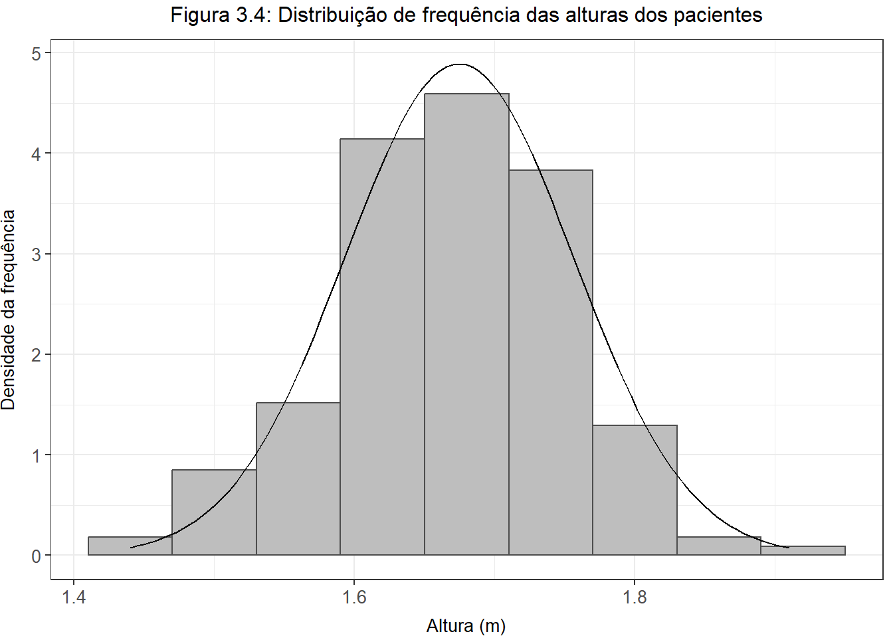
rehabcardio %>%
ggplot(aes(x = HDL)) +
geom_histogram(
mapping = aes(y = ..density..),
binwidth = 7,
fill = "grey",
color = "grey30"
) +
geom_function(
fun = dnorm,
args = list(
mean = mean(rehabcardio$HDL, na.rm = TRUE),
sd = sd(rehabcardio$HDL, na.rm = TRUE)
)
) +
labs(
title = "Figura 3.11: Distribuição de frequência do colesterol HDL dos pacientes",
x = "Colesterol HDL (mg/dL)",
y = "Densidade da frequência"
) +
tema## Warning: Removed 65 rows containing non-finite values (`stat_bin()`).
rehabcardio %>%
ggplot(aes(x = HDL)) +
stat_boxplot(geom = "errorbar", width = 0.2) +
geom_boxplot(
fill = "grey",
color = "grey30"
) +
labs(
title = "Figura 3.12: Distribuição do colesterol HDL dos pacientes",
x = "Colesterol HDL (mg/dL)"
) +
tema## Warning: Removed 65 rows containing non-finite values (`stat_boxplot()`).
## Removed 65 rows containing non-finite values (`stat_boxplot()`).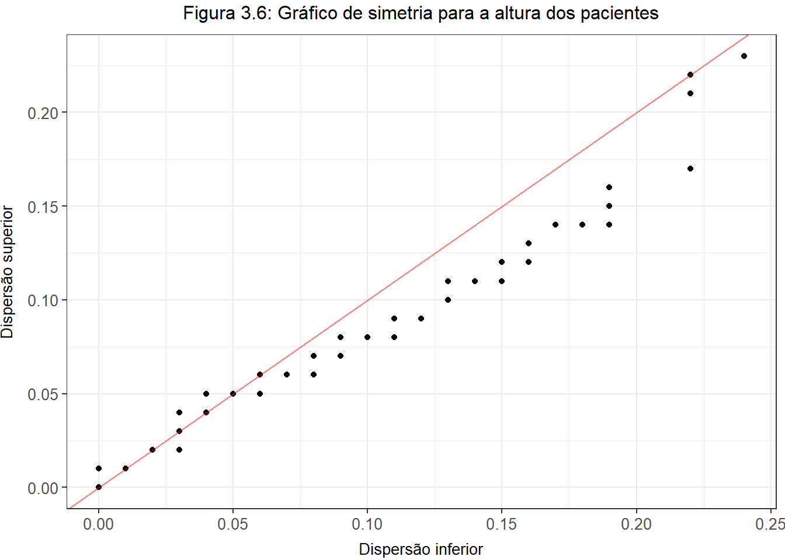
rehabcardio %>%
ggplot() +
geom_symmetry(rehabcardio$HDL) +
geom_abline(aes(intercept = 0, slope = 1), color = "red", alpha = .5) +
labs(
title = "Figura 3.13: Gráfico de simetria para os níveis de colesterol HDL dos pacientes",
x = "Dispersão inferior",
y = "Dispersão superior"
) +
tema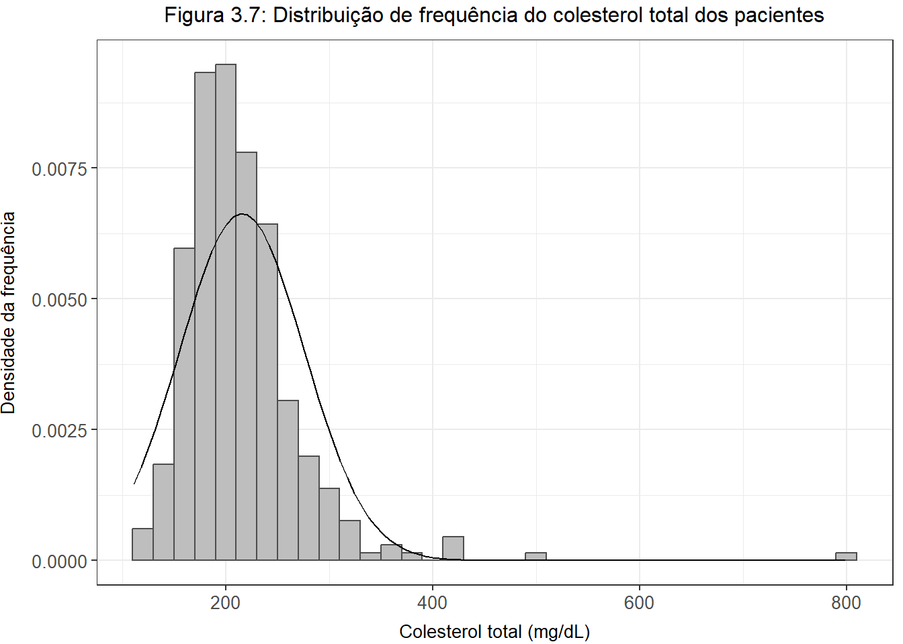
rehabcardio %>%
ggplot(aes(x = LDL)) +
geom_histogram(
mapping = aes(y = ..density..),
binwidth = 20,
fill = "grey",
color = "grey30"
) +
geom_function(
fun = dnorm,
args = list(
mean = mean(rehabcardio$LDL, na.rm = TRUE),
sd = sd(rehabcardio$LDL, na.rm = TRUE)
)
) +
labs(
title = "Figura 3.14: Distribuição de frequência do colesterol LDL dos pacientes",
x = "Colesterol LDL (mg/dL)",
y = "Densidade da frequência"
) +
tema## Warning: Removed 92 rows containing non-finite values (`stat_bin()`).rehabcardio %>%
ggplot(aes(x = LDL)) +
stat_boxplot(geom = "errorbar", width = 0.2) +
geom_boxplot(
fill = "grey",
color = "grey30"
) +
labs(
title = "Figura 3.15: Distribuição do colesterol LDL dos pacientes",
x = "Colesterol LDL (mg/dL)"
) +
tema## Warning: Removed 92 rows containing non-finite values (`stat_boxplot()`).
## Removed 92 rows containing non-finite values (`stat_boxplot()`).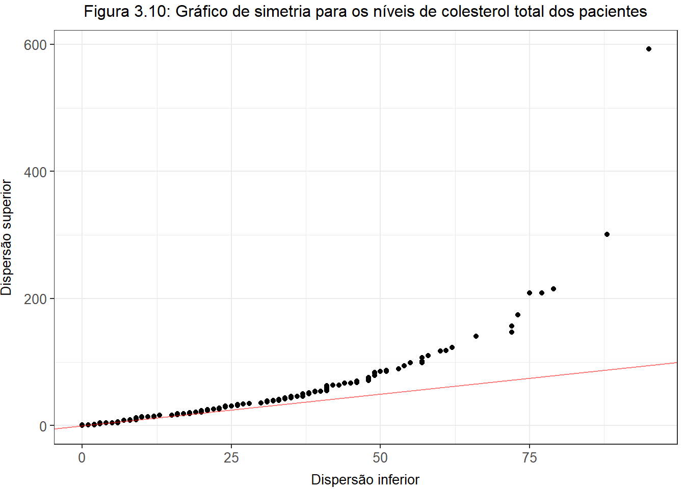
rehabcardio %>%
ggplot() +
geom_symmetry(rehabcardio$LDL)+
geom_abline(aes(intercept = 0, slope = 1), color = "red", alpha = .5) +
labs(
title = "Figura 3.16: Gráfico de simetria para os níveis de colesterol LDL dos pacientes",
x = "Dispersão inferior",
y = "Dispersão superior"
) +
tema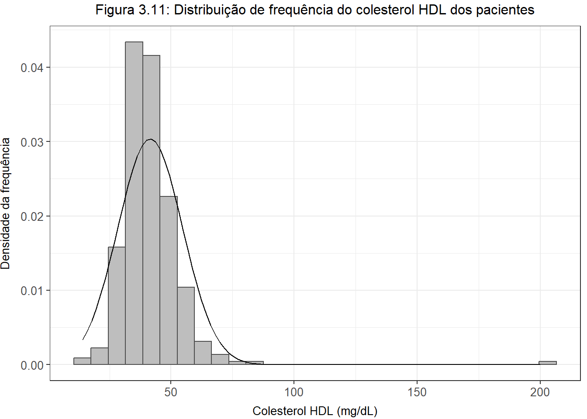
c) Construa uma tabela com medidas resumo para as variáveis continuas
summ <- function(x) {
c(
n = sum(!is.na(x), na.rm = TRUE),
`Mínimo` = min(x, na.rm = TRUE),
Q1 = quantile(x, 0.25, na.rm = TRUE)[[1]],
`Mediana` = median(x, na.rm = TRUE),
Q3 = quantile(x, 0.75, na.rm = TRUE)[[1]],
`Máximo` = max(x, na.rm = TRUE),
`Média` = mean(x, na.rm = TRUE),
`Desvio Padrão` = sd(x, na.rm = TRUE),
`Distância Interquartil` = IQR(x, na.rm = TRUE)
)
}
resumo <- rehabcardio %>%
select(Peso, Altura, Coltot, HDL, LDL) %>%
map(summ) %>%
as.data.frame() %>%
t()
resumo %>%
kable(
format = "pipe",
caption = "**Tabela 3.4:** Medidas de resumo para algumas variáveis de `rehabcardio.xls`",
label = NA,
digits = 2,
align = "c",
format.args = list(decimal.mark = ",")
)| n | Mínimo | Q1 | Mediana | Q3 | Máximo | Média | Desvio Padrão | Distância Interquartil | |
|---|---|---|---|---|---|---|---|---|---|
| Peso | 375 | 47,00 | 67,05 | 75,50 | 84,95 | 119,00 | 76,11 | 12,79 | 17,9 |
| Altura | 374 | 1,44 | 1,63 | 1,68 | 1,73 | 1,91 | 1,67 | 0,08 | 0,1 |
| Coltot | 327 | 111,00 | 180,00 | 206,00 | 238,00 | 799,00 | 215,43 | 60,16 | 58,0 |
| HDL | 316 | 14,00 | 35,00 | 40,00 | 46,00 | 200,00 | 41,52 | 13,14 | 11,0 |
| LDL | 289 | 57,00 | 110,00 | 129,00 | 159,00 | 425,00 | 137,31 | 43,41 | 49,0 |
d) Avalie a compatibilidade de distribuições normais para as variáveis continuas por meio de gráficos QQ
rehabcardio %>%
ggplot(aes(sample = Peso)) +
geom_qq() +
geom_qq_line() +
labs(
title = "Figura 3.17: Gráfico QQ normal para o peso dos pacientes",
x = "Quantis normais",
y = "Quantis amostrais"
) +
tema## Warning: Removed 6 rows containing non-finite values (`stat_qq()`).## Warning: Removed 6 rows containing non-finite values (`stat_qq_line()`).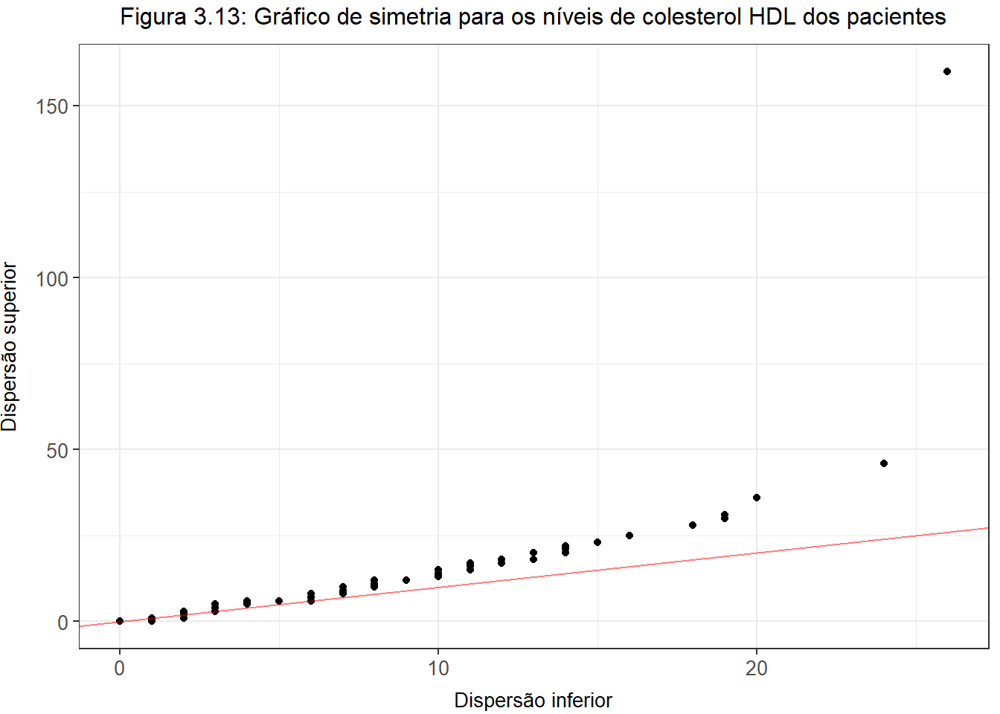
rehabcardio %>%
ggplot(aes(sample = Altura)) +
geom_qq() +
geom_qq_line() +
labs(
title = "Figura 3.18: Gráfico QQ normal para a altura dos pacientes",
x = "Quantis normais",
y = "Quantis amostrais"
) +
tema## Warning: Removed 7 rows containing non-finite values (`stat_qq()`).## Warning: Removed 7 rows containing non-finite values (`stat_qq_line()`).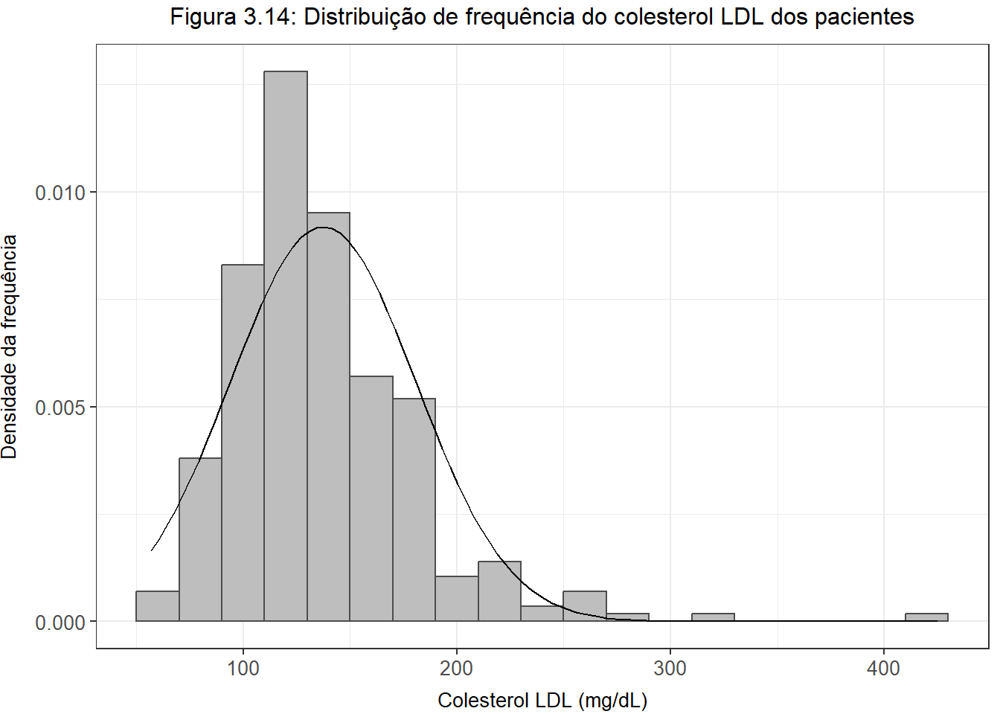
rehabcardio %>%
ggplot(aes(sample = Coltot)) +
geom_qq() +
geom_qq_line() +
labs(
title = "Figura 3.19: Gráfico QQ normal para os níveis de colesterol total dos pacientes",
x = "Quantis normais",
y = "Quantis amostrais"
) +
tema## Warning: Removed 54 rows containing non-finite values (`stat_qq()`).## Warning: Removed 54 rows containing non-finite values (`stat_qq_line()`).rehabcardio %>%
ggplot(aes(sample = HDL)) +
geom_qq() +
geom_qq_line() +
labs(
title = "Figura 3.20: Gráfico QQ normal para os níveis de colesterol HDL dos pacientes",
x = "Quantis normais",
y = "Quantis amostrais"
) +
tema## Warning: Removed 65 rows containing non-finite values (`stat_qq()`).## Warning: Removed 65 rows containing non-finite values (`stat_qq_line()`).rehabcardio %>%
ggplot(aes(sample = LDL)) +
geom_qq() +
geom_qq_line() +
labs(
title = "Figura 3.21: Gráfico QQ normal para os níveis de colesterol LDL dos pacientes",
x = "Quantis normais",
y = "Quantis amostrais"
) +
tema## Warning: Removed 92 rows containing non-finite values (`stat_qq()`).## Warning: Removed 92 rows containing non-finite values (`stat_qq_line()`).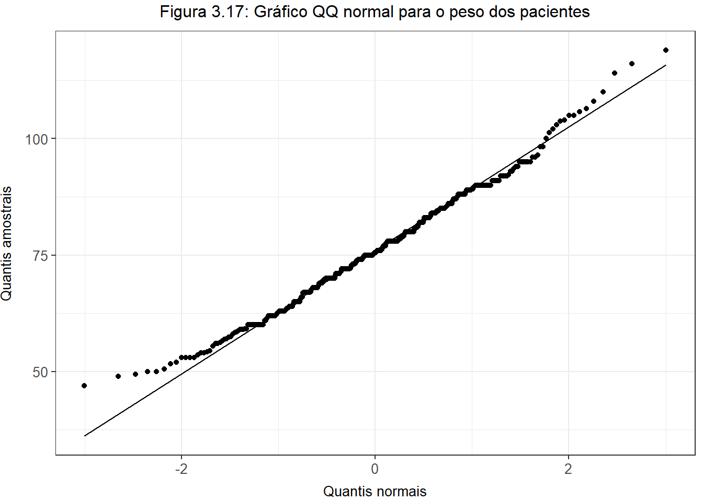
Exercício 3.2
Considere os dados do arquivo antracose.xls.
- Construa uma tabela com as medidas de posição e dispersão estudadas para as variáveis desse arquivo.
- Construa histogramas e boxplots para essas variáveis e verifique que transformação é necessária para tornar mais simétricas aquelas em que a simetria pode ser questionada.
Solução. Vamos começar carregando o arquivo.
Construa uma tabela com as medidas de posição e dispersão estudadas para as variáveis desse arquivo
A Tabela 3.5 apresenta as medidas de posição e dispersão dos dados.
resumo <- antracose %>%
map(summ) %>%
as.data.frame() %>%
t()
resumo %>%
kable(
format = "pipe",
caption = "**Tabela 3.5:** Medidas de resumo para algumas variáveis de `antracose.xls`",
label = NA,
digits = 2,
align = "c",
format.args = list(decimal.mark = ",")
)| n | Mínimo | Q1 | Mediana | Q3 | Máximo | Média | Desvio Padrão | Distância Interquartil | |
|---|---|---|---|---|---|---|---|---|---|
| idade | 2452 | 19,00 | 58,00 | 69,00 | 81,00 | 110,00 | 68,43 | 15,14 | 23,00 |
| tmunic | 2452 | 0,00 | 39,00 | 50,00 | 62,00 | 103,00 | 49,27 | 20,63 | 23,00 |
| htransp | 2452 | 0,00 | 0,00 | 0,83 | 2,00 | 12,00 | 1,78 | 2,54 | 2,00 |
| cargatabag | 2452 | 0,00 | 0,00 | 1,50 | 41,00 | 256,00 | 25,57 | 39,31 | 41,00 |
| antracose | 2350 | 0,00 | 0,07 | 0,17 | 0,29 | 0,83 | 0,20 | 0,16 | 0,22 |
| ses | 2452 | -1,00 | -0,51 | -0,31 | -0,05 | 1,00 | -0,24 | 0,36 | 0,47 |
| densid | 2452 | 0,00 | 0,01 | 0,02 | 0,02 | 0,04 | 0,02 | 0,01 | 0,01 |
| distmin | 2452 | 0,03 | 45,24 | 114,12 | 225,95 | 1964,02 | 170,67 | 190,87 | 180,71 |
Construa histogramas e boxplots para essas variáveis e verifique que transformação é necessária para tornar mais simétricas aquelas em que a simetria pode ser questionada
Para a variável idade, temos o seguinte:
antracose %>%
ggplot(aes(x = idade)) +
geom_histogram(
binwidth = 3,
fill = "grey",
color = "grey30"
) +
labs(
title = "Figura 3.22: Distribuição da idade dos pacientes",
x = "Idade (anos)"
) +
tema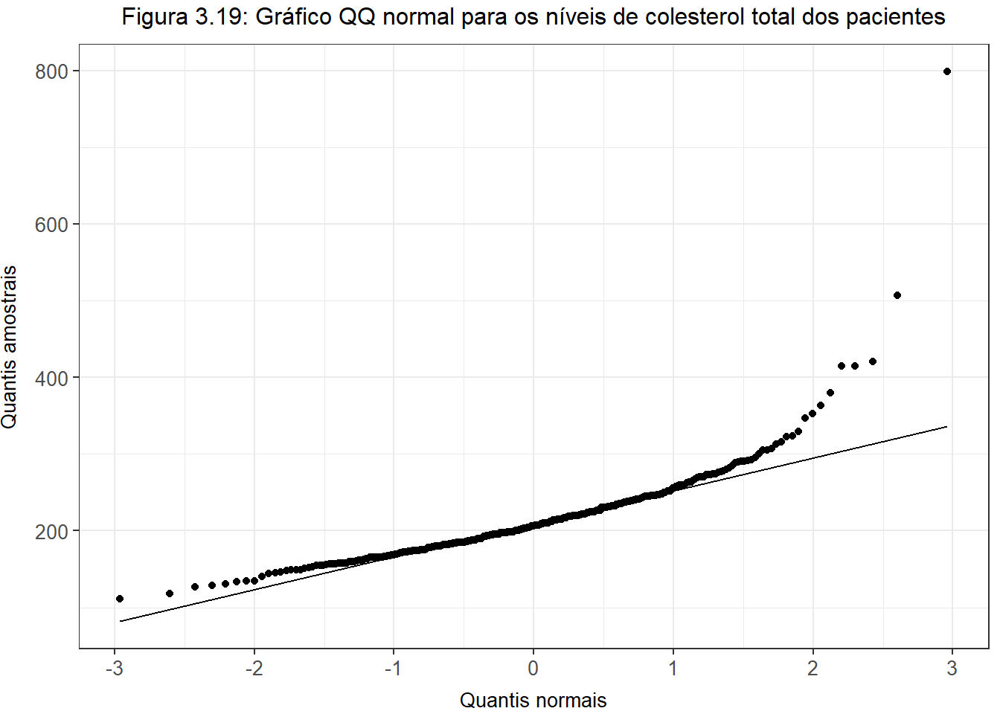
antracose %>%
ggplot(aes(x = idade)) +
stat_boxplot(geom = "errorbar", width = 0.2) +
geom_boxplot(
fill = "grey",
color = "grey30"
) +
labs(
title = "Figura 3.23: Idade dos pacientes",
x = "Idade (anos)"
) +
tema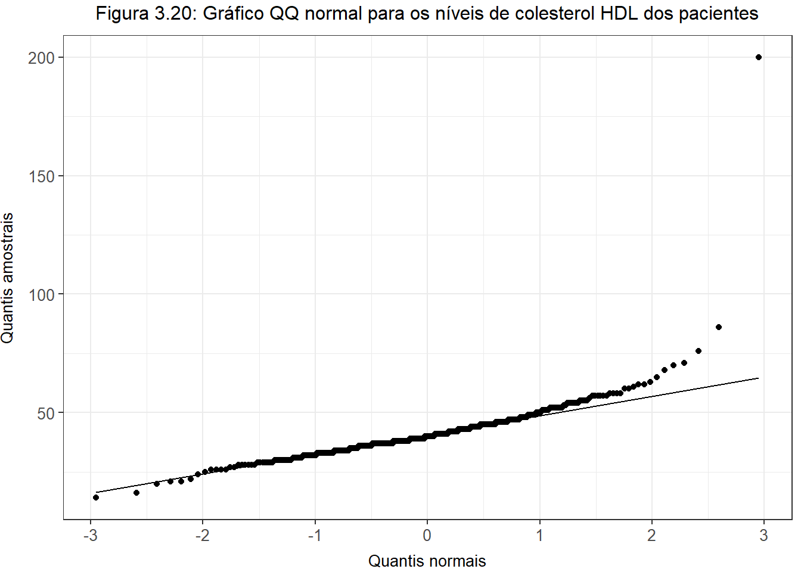 Observando os gráficos, podemos perceber uma leve (muito leve) assimetria à esquerda. O coeficiente de simetria de Fisher-Pearson ajustado é negativo (-0.1797772), o que indica a leve assimetria.
Entendemos que não seria necessário nenhuma transformação, uma vez que a assimetria é muito leve, porém se usarmos a transformação de Box-Cox, teremos o seguinte:
p <- seq(-3,3, 1/10) # c(-3, -2, -1, -1/2, -1/3, -1/4, 0, 1/4, 1/3, 1/2, 1, 2, 3)
transformar <- function(x, p) {
if(p > 0) {
x^p
} else if (p == 0) {
log(x)
} else {
-x^p
}
}
boxcox <- function(x, p) {
if(p == 0) {
log(x)
} else {
(((x ^ p) - 1) / p)
}
}
calcular_metrica <- function(x) {
x <- x[is.finite(x)]
(mean(x, na.rm = TRUE) - median(x, na.rm = TRUE)) / sd(x, na.rm = TRUE)
}
dps <- vector("double", length(p))
for (i in seq_along(p)) {
dps[[i]] <- antracose$idade %>%
transformar(p[i]) %>%
calcular_metrica()
}
p[min_rank(dps)[1]]## [1] -1Após a transformação, verificação que o valor que minimiza a nossa métrica de transformação é \(p = -1\), que faz a transformação levar \(x\) no seu simétrico \(-x\). Isso corrobora com a nossa hipótese de que a função já é a mais simétrica possível (nos termos da nossa transformação).
Para a variável tmunic, temos:
antracose %>%
ggplot(aes(x = tmunic)) +
geom_histogram(
binwidth = 8,
fill = "grey",
color = "grey30"
) +
labs(
title = "Figura 3.24: Distribuição da variável `tmunic`",
y = "Frequência"
) +
tema
antracose %>%
ggplot(aes(x = tmunic)) +
stat_boxplot(geom = "errorbar", width = 0.2) +
geom_boxplot(
fill = "grey",
color = "grey30"
) +
labs(
title = "Figura 3.25: Distribuição da variável `tmunic`"
) +
temaObservando os gráficos, podemos perceber uma leve (muito leve) assimetria à esquerda. O coeficiente de simetria de Fisher-Pearson ajustado é negativo (-0.3960939), o que indica a leve assimetria.
Podemos usar uma transformação para corrigir a assimetria dos dados:
dps <- vector("double", length(p))
for (i in seq_along(p)) {
dps[[i]] <- antracose$tmunic %>%
boxcox(p[i]) %>%
calcular_metrica()
}
p[min_rank(dps)[1]]## [1] 0.7Notamos que o melhor valor de \(p\) é \(-1/3\). Com isso, podemos realizar utilizar esta transformação.
antracose$tmunic2 <- boxcox(antracose$tmunic, p[min_rank(dps)[1]])
antracose %>%
ggplot(aes(x = tmunic2)) +
geom_histogram(
binwidth = 1,
fill = "grey",
color = "grey30"
) +
labs(
title = "Figura 3.26: Distribuição da variável `tmunic2`",
y = "Frequência"
) +
temaNeste caso, a transformação não melhorou a simetria dos dados. Em vez disso, o coeficiente de assimetria saltou de -0.3960939 para -0.9443456.
Para a variável htransp, temos:
antracose %>%
ggplot(aes(x = htransp)) +
geom_histogram(
binwidth = 0.5,
fill = "grey",
color = "grey30"
) +
labs(
title = "Figura 3.27: Distribuição da variável `htransp`"
) +
tema
antracose %>%
ggplot(aes(x = htransp)) +
stat_boxplot(geom = "errorbar", width = 0.2) +
geom_boxplot(
fill = "grey",
color = "grey30"
) +
labs(
title = "Figura 3.28: Distribuição da variável `htransp`"
) +
tema A variável contém uma forte assimetria a direita, conforme atesta também o coeficiente de simetria de Fisher-Pearson ajustado (2.0507871).
A variável contém uma forte assimetria a direita, conforme atesta também o coeficiente de simetria de Fisher-Pearson ajustado (2.0507871).
Vamos realizar uma transformação:
dps <- vector("double", length(p))
for (i in seq_along(p)) {
dps[[i]] <- antracose$htransp %>%
boxcox(p[i]) %>%
calcular_metrica()
}
p[min_rank(dps)[i]]## [1] 0.9Para os valores de \(p\), o melhor ajuste se dá quando \(p = 0.9\), vamos utilizá-lo então!
antracose$htransp2 <- boxcox(antracose$htransp, p[min_rank(dps)[i]])
antracose %>%
ggplot(aes(x = htransp2)) +
geom_histogram(
binwidth = .5,
fill = "grey",
color = "grey30"
) +
labs(
title = "Figura 3.29: Distribuição da variável `log(htransp)`"
) +
tema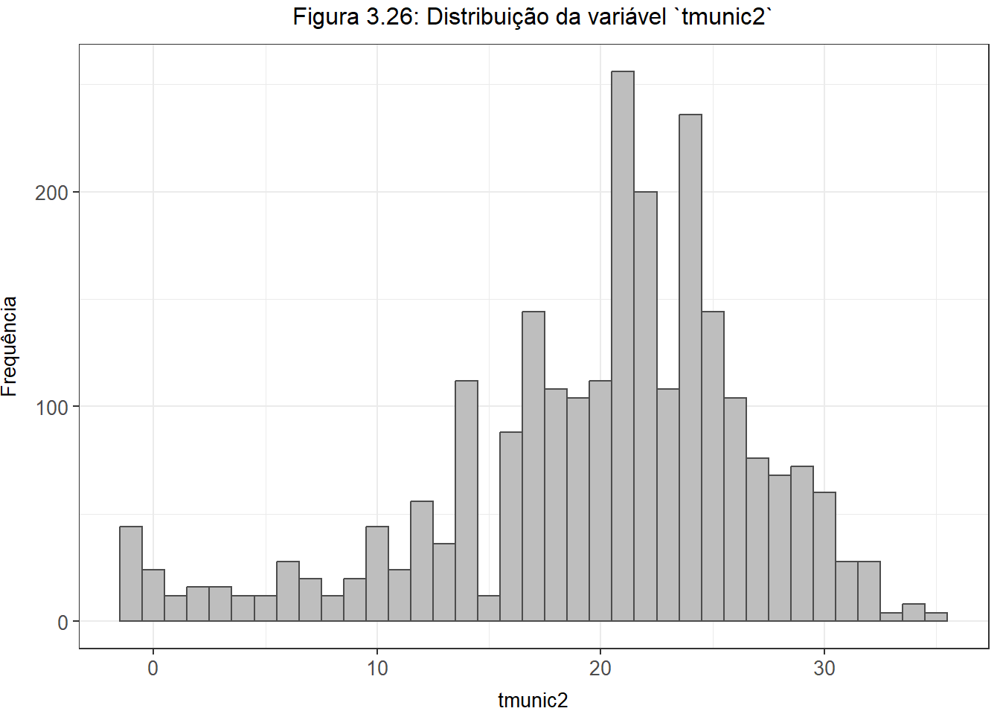 Isso melhora um pouco a simetria dos dados, mas ainda assim não é suficiente. Vamos por exemplo, comparar os valores antes e depois da transformação.
## [1] 2.050787## [1] 1.851695Vejamos agora a variável cargatabag:
antracose %>%
ggplot(aes(x = cargatabag)) +
geom_histogram(
binwidth = 15,
fill = "grey",
color = "grey30"
) +
labs(
title = "Figura 3.30: Distribuição da variável `cargatabag`"
) +
tema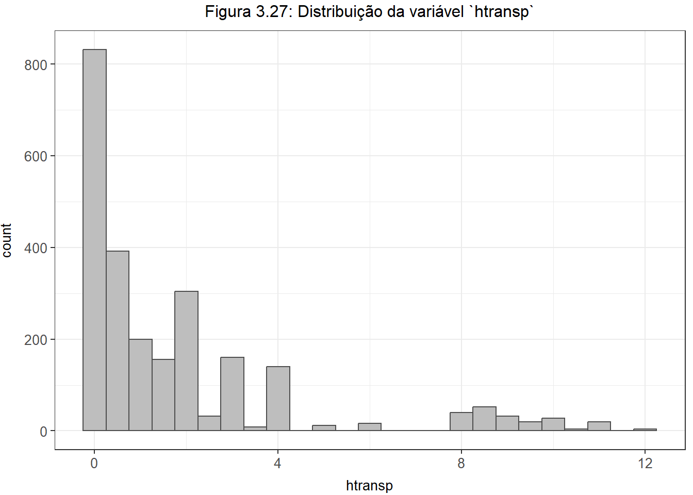
antracose %>%
ggplot(aes(x = cargatabag)) +
stat_boxplot(geom = "errorbar", width = 0.2) +
geom_boxplot(
fill = "grey",
color = "grey30"
) +
labs(
title = "Figura 3.31: Distribuição da variável `cargatabag`"
) +
temaTemos uma distribuição fortemente assimétrica à direita. O Coeficiente de Assimetria de Fisher-Pearson Ajustado nos indica um grau de assimetria na ordem de 2.0334838.
Como a distribuição tem um formato exponencial, apostaremos que a transformação que leva \(x\) em \(log(x)\) seja suficiente para melhorar a distibuição dos dados.
antracose %>%
ggplot(aes(log(cargatabag))) +
geom_histogram(
binwidth = .6,
fill = "grey",
color = "grey30"
) +
labs(
title = "Figura 32: Distribuição da variável `cargatabag`"
) +
tema## Warning: Removed 1196 rows containing non-finite values (`stat_bin()`).Continuamos com assimetria, desta vez à esquerda. Vamos realizar outras transformações e avaliar a nossa métrica.
dps <- vector("double", length(p))
for (i in seq_along(p)) {
dps[[i]] <- antracose$htransp %>%
boxcox(p[i]) %>%
calcular_metrica()
}
p[min_rank(dps)[1]]## [1] 0.3Notamos que para \(p = 0.3\), nossa métrica é minimizada.
antracose$cargatabag2 <- transformar(antracose$cargatabag, p[min_rank(dps)[1]])
antracose %>%
ggplot(aes(x = cargatabag2)) +
geom_histogram(
fill = "grey",
color = "grey30"
) +
labs(
title = "Figura 3.33: Distribuição da variável `cargatabag`"
) +
tema## `stat_bin()` using `bins = 30`. Pick better value with `binwidth`.Note que, os valores continuam concentrados no zero, mas os demais, se distribuem de forma mais simétrica do que antes. É importante destacar que, nem sempre será possível tornar simétrica uma distribuição. Neste caso, deveremos procurar técnicas que não dependam da simetria dos dados.
Analisemos agora a variável antracose:
antracose %>%
ggplot(aes(x = antracose)) +
geom_histogram(
binwidth = .05,
fill = "grey",
color = "grey30"
) +
labs(
title = "Figura 3.34: Distribuição da variável `antracose`"
) +
tema## Warning: Removed 102 rows containing non-finite values (`stat_bin()`).
antracose %>%
ggplot(aes(x = antracose)) +
stat_boxplot(geom = "errorbar", width = 0.2) +
geom_boxplot(
fill = "grey",
color = "grey30"
) +
labs(
title = "Figura 3.35: Distribuição da variável `antracose`"
) +
tema## Warning: Removed 102 rows containing non-finite values (`stat_boxplot()`).
## Removed 102 rows containing non-finite values (`stat_boxplot()`).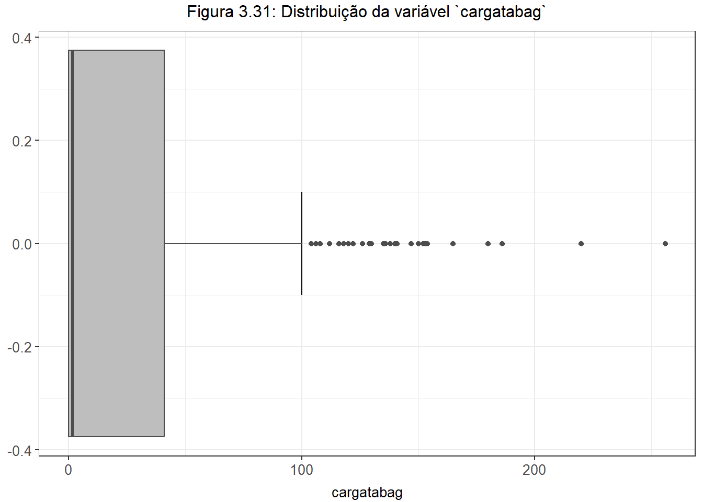
Temos uma forte assimetria à direita. O Coeficiente de Assimetria de Fisher-Pearson Ajustado é NA. Vamos verificar se podemos usar uma transformação nos dados.
dps <- vector("double", length(p))
for (i in seq_along(p)) {
dps[[i]] <- antracose$antracose %>%
boxcox(p[i]) %>%
calcular_metrica()
}
p[min_rank(dps)[1]]## [1] 0.3O valor \(p = 0.3\) minimiza a nossa medida de avaliação. Vamos agora plotar os dados transformados e avaliar novamente o coeficiente de assimetria.
antracose$antracose2 <- boxcox(antracose$antracose, p[min_rank(dps)[1]])
antracose %>%
ggplot(aes(x = antracose2)) +
geom_histogram(
binwidth = .3,
fill = "grey",
color = "grey30"
) +
labs(
title = "Figura 3.36: Distribuição da variável `antracose`"
) +
tema## Warning: Removed 102 rows containing non-finite values (`stat_bin()`).Parece-nos que os dados se tornaram um pouco mais simétricos, mas nada muito significativo. Talvez valha a pena entender se a concentração dos valores em zero é uma medida real ou se apenas serve para simbolizar, por exemplo, um valor que não pode ser medido devido ao valor de outra variável.
## [1] 0.9535379## [1] -0.9171354Para a variável ses, temos:
antracose %>%
ggplot(aes(x = ses)) +
geom_histogram(
binwidth = .2,
fill = "grey",
color = "grey30"
) +
labs(
title = "Figura 3.37: Distribuição da variável `ses`"
) +
temaantracose %>%
ggplot(aes(x = ses)) +
stat_boxplot(geom = "errorbar", width = 0.2) +
geom_boxplot(
fill = "grey",
color = "grey30"
) +
labs(
title = "Figura 3.38: Distribuição da variável `ses`"
) +
temaTemos uma leve assimetria à direita. O Coeficiente de Assimetria de Fisher-Pearson Ajustado é 0.9535379. Vamos verificar se podemos usar uma transformação nos dados.
dps <- vector("double", length(p))
for (i in seq_along(p)) {
dps[[i]] <- antracose$ses %>%
boxcox(p[i]) %>%
calcular_metrica()
}## Warning in log(x): NaNs produzidos## [1] 0.4O valor \(p = 0.4\) minimiza a nossa medida de avaliação. Vamos agora plotar os dados transformados e avaliar novamente o coeficiente de assimetria.
antracose$ses2 <- boxcox(antracose$ses, p[min_rank(dps)[1]])
antracose %>%
ggplot(aes(x = ses2)) +
geom_histogram(
binwidth = .6,
fill = "grey",
color = "grey30"
) +
labs(
title = "Figura 3.39: Distribuição da variável `antracose`"
) +
tema## Warning: Removed 1920 rows containing non-finite values (`stat_bin()`).Notamos que o histograma se tornou um pouco mais simétrico. Vamos avaliar os valores dos coeficientes de assimetria.
## [1] 0.9793336## [1] -0.1564781De fato, a transformação da variável nos trouxe uma melhoria significativa na simetria dos dados.
Para a variável densid:
antracose %>%
ggplot(aes(x = densid)) +
geom_histogram(
binwidth = .003,
fill = "grey",
color = "grey30"
) +
labs(
title = "Figura 3.40: Distribuição da variável `densid`"
) +
tema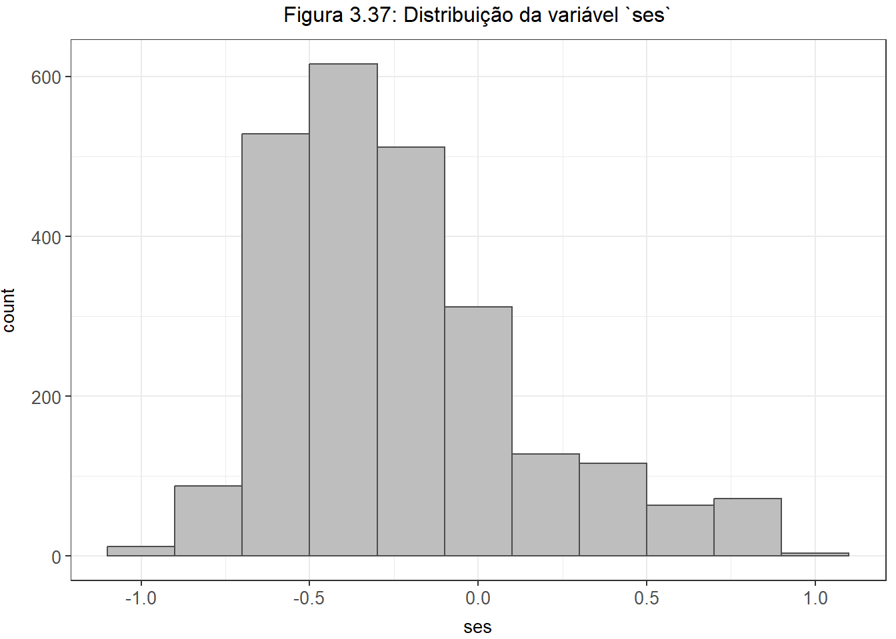
antracose %>%
ggplot(aes(x = densid)) +
stat_boxplot(geom = "errorbar", width = 0.2) +
geom_boxplot(
fill = "grey",
color = "grey30"
) +
labs(
title = "Figura 3.41: Distribuição da variável `densid`"
) +
temaA distribuição já nos parece bastante adequada, com coeficiente de assimetria -0.4460641.
dps <- vector("double", length(p))
for (i in seq_along(p)) {
dps[[i]] <- antracose$densid %>%
boxcox(p[i]) %>%
calcular_metrica()
}
p[min_rank(dps)[1]]## [1] 1Para os diversos valores de \(p\), o que minimiza a nossa métrica é justamente \(p = 1\), que nos dá a transformação identidade. Em outras palavras, as transformações com as quais estamos trabalhando, não nos darão melhores resultados.
Por fim, vamos à variável distmin:
antracose %>%
ggplot(aes(x = distmin)) +
geom_histogram(
binwidth = 190,
fill = "grey",
color = "grey30"
) +
labs(
title = "Figura 3.42: Distribuição da variável `distmin`"
) +
temaantracose %>%
ggplot(aes(x = distmin)) +
stat_boxplot(geom = "errorbar", width = 0.2) +
geom_boxplot(
fill = "grey",
color = "grey30"
) +
labs(
title = "Figura 3.43: Distribuição da variável `distmin`"
) +
temaTemos uma forte assimetria à direita. O Coeficiente de Assimetria de Fisher-Pearson Ajustado é 2.9669771. Vamos verificar se podemos usar uma transformação nos dados.
dps <- vector("double", length(p))
for (i in seq_along(p)) {
dps[[i]] <- antracose$distmin %>%
boxcox(p[i]) %>%
calcular_metrica()
}
p[min_rank(dps)[1]]## [1] 0.2O valor \(p = 0.2\) minimiza a nossa medida de avaliação. Vamos agora plotar os dados transformados e avaliar novamente o coeficiente de assimetria.
antracose$distmin2 <- boxcox(antracose$antracose, p[min_rank(dps)[1]])
antracose %>%
ggplot(aes(x = distmin2)) +
geom_histogram(
binwidth = 1,
fill = "grey",
color = "grey30"
) +
labs(
title = "Figura 3.44: Distribuição da variável `antracose`"
) +
tema## Warning: Removed 102 rows containing non-finite values (`stat_bin()`).Notamos uma pequena melhora, porém ainda há uma concentração de dados em torno de um valor inicial. Analisemos o coef. de assimetria antes e depois da transformação.
## [1] 2.966977## [1] -1.819497Exercício 3.3
Considere as variáveis Peso e Altura de homens do conjunto de dados rehabcardio. Determine o número de classes para os histogramas correspondentes por meio de (3.26) e (3.27) e construa-os.
Solução. Inicialmente vamos filtrar o conjunto de dados original selecionando apenas os indivíduos do sexo masculino.
Vamos agora definir as funções freedman_diaconis e sturges para calcular a amplitude das classes.
freedman_diaconis <- function(x) {
s <- sd(x, na.rm = TRUE)
n <- length(x)
1.349 * s * ((log(n) / n)^(1/3))
}
sturges <- function(x) {
r <- range(rehabcardio_h$Peso, na.rm = T)
w = r[2] - r[1]
n <- length(x)
w / (1 + 3.322 * log(n))
}Com as funções definidas, podemos construir os histogramas usando essa amplitude de classes.
rehabcardio_h %>%
ggplot(aes(Peso)) +
geom_histogram(
binwidth = freedman_diaconis(rehabcardio_h$Peso),
fill = "grey",
color = "grey30"
) +
labs(
title = "Figura 3.45: Distribuição do peso utilizando Freedman-Diaconis"
) +
tema## Warning: Removed 5 rows containing non-finite values (`stat_bin()`).
rehabcardio_h %>%
ggplot(aes(Peso)) +
geom_histogram(
binwidth = sturges(rehabcardio_h$Peso),
fill = "grey",
color = "grey30"
) +
labs(
title = "Figura 3.46: Distribuição do peso utilizando Sturges"
) +
tema## Warning: Removed 5 rows containing non-finite values (`stat_bin()`).rehabcardio_h %>%
ggplot(aes(Altura)) +
geom_histogram(
binwidth = freedman_diaconis(rehabcardio_h$Altura),
fill = "grey",
color = "grey30"
) +
labs(
title = "Figura 3.47: Distribuição da altura utilizando Freedman-Diaconis"
) +
tema## Warning: Removed 6 rows containing non-finite values (`stat_bin()`).rehabcardio_h %>%
ggplot(aes(Altura)) +
geom_histogram(
binwidth = sturges(rehabcardio_h$Altura),
fill = "grey",
color = "grey30"
) +
labs(
title = "Figura 3.48: Distribuição da altura utilizando Sturges"
) +
tema## Warning: Removed 6 rows containing non-finite values (`stat_bin()`).
Exercício 3.4
Considere o arquivo vento.xls. Observe o valor atipico \(61,1\), que na realidade ocorreu devido a uma forte tempestade no dia 2 de dezembro. Calcule as medidas de posição e dispersão apresentadas na Seção 3.3. Quantifique o efeito do valor atipico indicado nessas medidas.
Solução. Em primeiro lugar, carregamos o conjunto de dados:
Esboçaremos um gráfico mostrando a velocidade do vento a cada dia.
vento %>%
ggplot(aes(t, vt)) +
geom_line() +
geom_point() +
labs(
title = "Figura 3.49: Velocidade do vento nos primeiros quinze dias de dezembro",
x = "Dia",
y = "Velocidade"
) +
scale_x_continuous(breaks = seq(1, 15, 1)) +
tema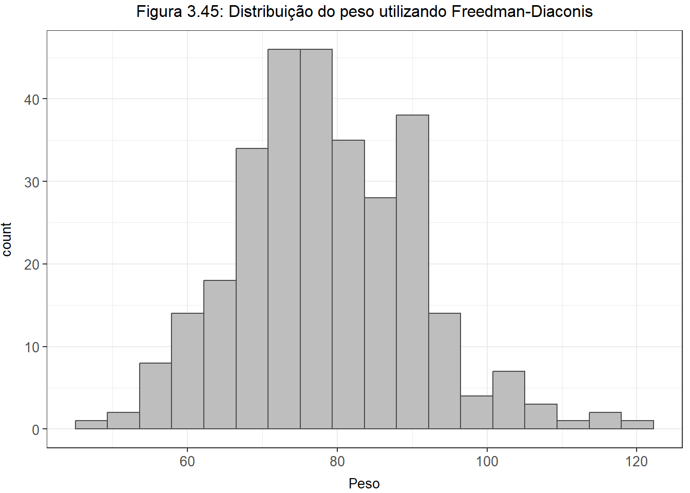
Medidas de posição
A média da amostra é 18.4 e o desvio padrão é 13.525373. Os quartis da amostras são apresentados abaixo:
t1 <- data.frame(
`Mínimo` = min(vento$vt),
`Q1` = quantile(vento$vt, 0.25)[[1]],
`Mediana` = median(vento$vt),
`Q3` = quantile(vento$vt, 0.75)[[1]],
`Máximo` = max(vento$vt),
`Média` = mean(vento$vt),
`Desvio Padrão` = sd(vento$vt)
)
vento2 <- vento %>% filter(vt < 60)
t2 <- data.frame(
`Mínimo` = min(vento2$vt),
`Q1` = quantile(vento2$vt, 0.25)[[1]],
`Mediana` = median(vento2$vt),
`Q3` = quantile(vento2$vt, 0.75)[[1]],
`Máximo` = max(vento2$vt),
`Média` = mean(vento2$vt),
`Desvio Padrão` = sd(vento2$vt)
)
resumo <- bind_rows(t1, t2, t1 - t2)
row.names(resumo) <- c("Antes", "Depois", "Diferença")
resumo %>%
kable(
format = "pipe",
caption = "**Tabela 3.6:** Medidas de resumo para a velocidade do vento",
label = NA,
digits = 2,
align = "c",
format.args = list(decimal.mark = ",")
)| Mínimo | Q1 | Mediana | Q3 | Máximo | Média | Desvio.Padrão | |
|---|---|---|---|---|---|---|---|
| Antes | 7,4 | 9,25 | 14,8 | 21,3 | 61,1 | 18,40 | 13,53 |
| Depois | 7,4 | 8,33 | 13,9 | 20,4 | 27,8 | 15,35 | 6,84 |
| Diferença | 0,0 | 0,92 | 0,9 | 0,9 | 33,3 | 3,05 | 6,69 |
Notamos que após remoção do valor atípico, há uma diferença considerável tanto na média, como no desvio padrão. Este caiu pela metade.
Exercício 3.5
Construa gráficos ramo-e-folhas e boxplot para os dados do Exercício 4.
Exercício 3.6
Transforme os dados do Exercicio 4 por meio de (3.23) com \(p = 0, 1/4, 1/3, 1/2, 3/4\) e escolha a melhor alternativa de acordo com a medida \(d_{p}\), dada em (3.24).
Solução. Vamos utilizar as funções boxcox() e calcular_metrica() criadas anteriomente.
p <- c(0,1/4, 1/3, 1/2, 3/4)
dps <- vector("double", length(p))
for (i in seq_along(p)) {
dps[i] <- vento$vt %>%
boxcox(p[i]) %>%
calcular_metrica()
}
p[min_rank(dps)[1]]## [1] 0A melhor opção para a transformação é \(p = 0\), logo a transformação é dada pela função log.
vento %>%
ggplot(aes(t, boxcox(vt, 0))) +
geom_line() +
geom_point() +
labs(
title = "Figura 3.50: Velocidade do vento nos primeiros quinze dias de dezembro",
x = "Dia",
y = "Velocidade"
) +
scale_x_continuous(breaks = seq(1, 15, 1)) +
tema
vento %>%
ggplot(aes(log(vt))) +
geom_histogram(
fill = "grey",
color = "grey30"
) +
labs(
title = "Figura 3.51: Distribuição da velocidade do vento",
x = "Dia",
y = "Frequência"
) +
scale_x_continuous(breaks = seq(1, 15, 1)) +
tema## `stat_bin()` using `bins = 30`. Pick better value with `binwidth`.Exercício 3.7
Analise a variável Temperatura do arquivo poluicao.xls.
Solução. Inicialmente carregaos os dados:
E vamos verificar um resumo das variáveis:
## data dia CO O3
## Length:120 Min. : 1.00 Min. : 4.700 Min. : 2.70
## Class :character 1st Qu.: 30.75 1st Qu.: 6.300 1st Qu.: 34.40
## Mode :character Median : 60.50 Median : 7.200 Median : 62.95
## Mean : 60.50 Mean : 7.464 Mean : 76.33
## 3rd Qu.: 90.25 3rd Qu.: 8.025 3rd Qu.:114.00
## Max. :120.00 Max. :12.500 Max. :233.20
## temp umid
## Min. :12.30 Min. :50.00
## 1st Qu.:16.00 1st Qu.:62.00
## Median :17.70 Median :67.50
## Mean :17.22 Mean :70.78
## 3rd Qu.:18.60 3rd Qu.:78.00
## Max. :21.00 Max. :99.00Temos 120 observações, sendo que a temperatura é dada pela variável temp e tem média 17.2158333 e desvio padrão 1.7597267.
poluicao %>%
ggplot(aes(dia, temp)) +
geom_point() +
labs(
title = "Figura 3.52: Variação da temperatura nos primeiros 120 dias do ano",
x = "Dia",
y = "Temperatura"
) +
tema
poluicao %>%
ggplot(aes(temp)) +
geom_histogram(
binwidth = 0.75,
fill = "grey",
color = "grey30"
) +
labs(
title = "Figura 3.53: Distribuição da temperatura",
x = "Temperatura",
y = "Frequência"
) +
tema
poluicao %>%
ggplot(aes(temp)) +
stat_boxplot(geom = "errorbar", width = 0.2) +
geom_boxplot(
fill = "grey",
color = "grey30"
) +
labs(
title = "Figura 3.54: Distribuição da temperatura",
x = "Temperatura"
) +
temaA distribuição tem uma leve assimetria à esquerda. O coeficiente de Assimetria de Fisher-Pearson Ajustado é -0.4253503
Utilizaremos a transformação de Box-Cox para tentar melhorar a simetria dos dados.
p <- seq(-3, 3, 1/10)
dps <- vector("double", length(p))
for (i in seq_along(p)) {
dps[i] <- poluicao$temp %>%
boxcox(p[i]) %>%
calcular_metrica()
}
poluicao$temp2 <- boxcox(poluicao$temp, p[min_rank(dps)[1]])Comparando os coeficientes de assimetria antes e após a transformação:
## [1] -0.4253503## [1] -1.53657Notamos que a transformação não melhorou a assimetria do gráfico.
poluicao %>%
ggplot(aes(temp2)) +
geom_histogram(
bins = 10,
fill = "grey",
color = "grey30"
) +
labs(
title = "Figura 3.55: Distribuição da temperatura",
x = "Temperatura",
y = "Frequência"
) +
tema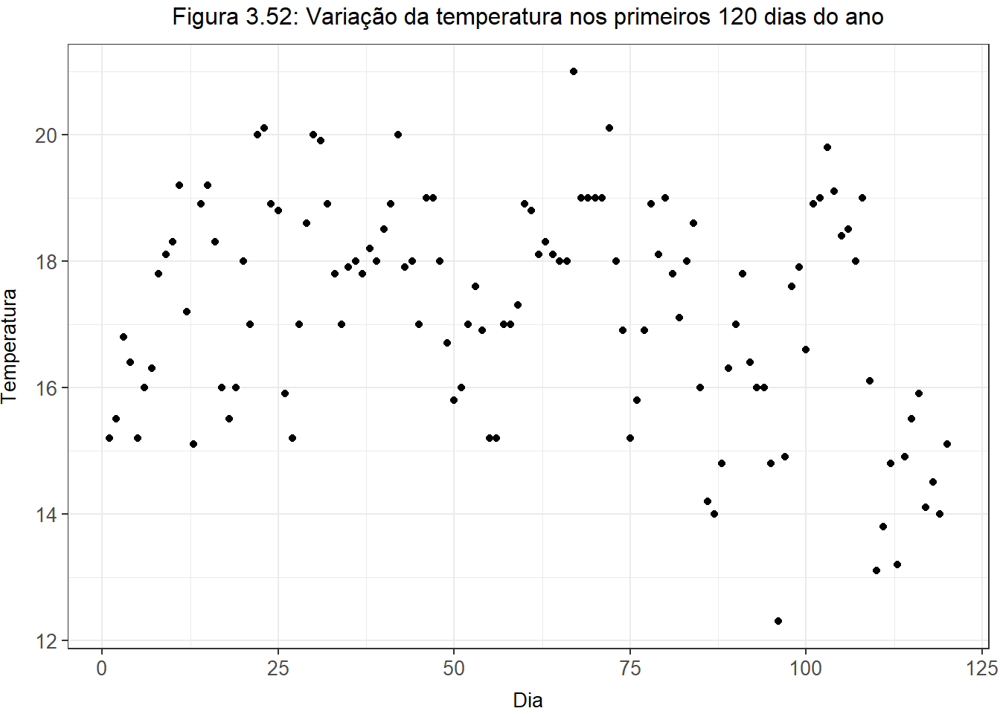
Exercício 3.8
Analise a variável Salário de administradores, disponível no arquivo salarios.xls.
Solução. Carregando os dados:
O conjunto de dados contém valores de salários para quatro profissões (Profissional de Segurança, Mecânico, Administrador e Engenheiro Eletricista) em trinta cidades ao redor do mundo.
Vamos fazer uma transformação nos dados para facilitar a visualização:
Agora vamos visualizar os salários por profissão:
salario2 %>%
group_by(Profissao) %>%
summarise(
Media = mean(Salario)
) %>%
ggplot(aes(x = Profissao, y = Media)) +
geom_col(
fill = "grey",
color = "grey30"
) +
geom_label(aes(x = Profissao, y = Media, label = format(round(Media, 2), decimal.mark = ",", big.mark = "."))) +
labs(
title = "Figura 3.56: Salário médio por profissão",
x = "Profissão",
y = "Salário"
) +
tema
salario2 %>%
ggplot(aes(Profissao, Salario, group = Profissao)) +
geom_boxplot(
fill = "grey",
color = "grey30",
) +
labs(
title = "Figura 3.57: Distribuição dos salários por profissão",
x = "Profissão",
y = "Salário"
) +
tema
A média geral dos salários é 28.614,47 e o desvio padrão é 17.974,29.
Agora vamos focar apenas nos administradores. A distribuição dos salários por cidade é mostrada no gráfico a seguir:
order <- arrange(salarios, Administrador)$Cidade
salarios %>%
ggplot(aes(Cidade, Administrador)) +
geom_col(
fill = "grey",
color = "grey30",
) +
coord_flip() +
scale_x_discrete(limits = order) +
labs(
title = "Figura 3.58: Distribuição dos salários por profissão",
x = "Profissão",
y = "Salário"
) +
temaA média salarial dos administradores é 42.496,33, o desvio padrão é 20.366,78 e a mediana é 42.510.
Exercício 3.9
Construa um gráfico ramo-e-folhas e um boxplot para os dados de precipitação atmosférica de Fortaleza disponíveis no arquivo precipitacao.xls.
Solução. Carregamos os dados com a função readxls do pacote readxl:
## New names:
## • `Ano` -> `Ano...1`
## • `Chuva` -> `Chuva...2`
## • `Ano` -> `Ano...3`
## • `Chuva` -> `Chuva...4`
## • `Ano` -> `Ano...5`
## • `Chuva` -> `Chuva...6`
## • `Ano` -> `Ano...7`
## • `Chuva` -> `Chuva...8`Como os dados estão mal organizados na planilha, precisamos fazer um ajuste.
a <- precipitacao %>%
select(Ano...1, Chuva...2)
b <- precipitacao %>%
select(Ano...3, Chuva...4)
c <- precipitacao %>%
select(Ano...5, Chuva...6)
d <- precipitacao %>%
select(Ano...7, Chuva...8)
precipitacao <- bind_rows(a, b, c, d) %>% drop_na()## New names:
## New names:
## New names:
## New names:
## • `Ano...1` -> `Ano`
## • `Chuva...2` -> `Chuva`Utilizamos a função stem() para construir o diagrama de ramos e folhas:
##
## The decimal point is 2 digit(s) to the right of the |
##
## 4 | 7
## 5 | 003
## 6 | 06
## 7 | 045889
## 8 | 12335688
## 9 | 24468
## 10 | 00123445578999
## 11 | 0113444599
## 12 | 0123334566799
## 13 | 011223667889
## 14 | 02233555667799
## 15 | 111345577899
## 16 | 0336
## 17 | 1223345578
## 18 | 1144556689
## 19 | 114
## 20 | 035689
## 21 | 044
## 22 | 6
## 23 | 38
## 24 | 135689
## 25 | 011
## 26 |
## 27 |
## 28 | 4Utilizamos ggplot2 para construir o boxplot.
precipitacao %>%
ggplot(aes(Chuva)) +
stat_boxplot(geom = "errorbar", width = 0.2) +
geom_boxplot(
fill = "grey",
color = "grey30",
) +
labs(
title = "Figura 3.59: Precipitação atmosférica em Fortaleza-CE",
x = "Chuva"
) +
tema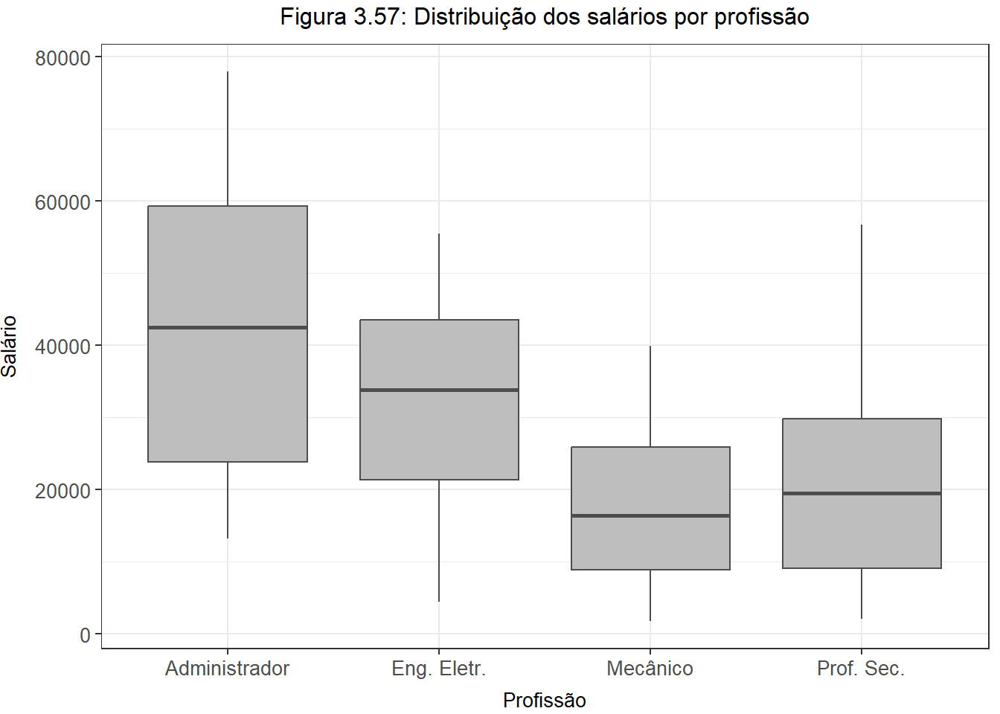 Salvamos o conjunto de dados para futuras análises:
Exercício 3.10
Construa gráficos de quantis e de simetria para os dados de arquivo manchas solares disponíveis no arquivo manchas.xls.
Solução. Carregamos os dados com readxl:
## New names:
## • `Ano` -> `Ano...1`
## • `Número` -> `Número...2`
## • `Ano` -> `Ano...3`
## • `Número` -> `Número...4`
## • `Ano` -> `Ano...5`
## • `Número` -> `Número...6`
## • `Ano` -> `Ano...7`
## • `Número` -> `Número...8`a <- manchas %>% select(Ano...1, Número...2)
b <- manchas %>% select(Ano...3, Número...4)
c <- manchas %>% select(Ano...5, Número...6)
d <- manchas %>% select(Ano...7, Número...8)
manchas <- bind_rows(a, b, c, d) %>% drop_na()## New names:
## New names:
## New names:
## New names:
## • `Ano...1` -> `Ano`
## • `Número...2` -> `Número`Agora vamos construir o gráfico que quantis:
p <- seq(0, 1, 0.02)
q <- quantile(manchas$Número, p)
data.frame(p, q) %>%
ggplot(aes(p, q)) +
geom_point() +
geom_vline(aes(xintercept = 0.5)) +
labs(
title = "Figura 3.60: Quantis para o número de manchas solares",
x = "p",
y = "Quantis amostrais"
) +
tema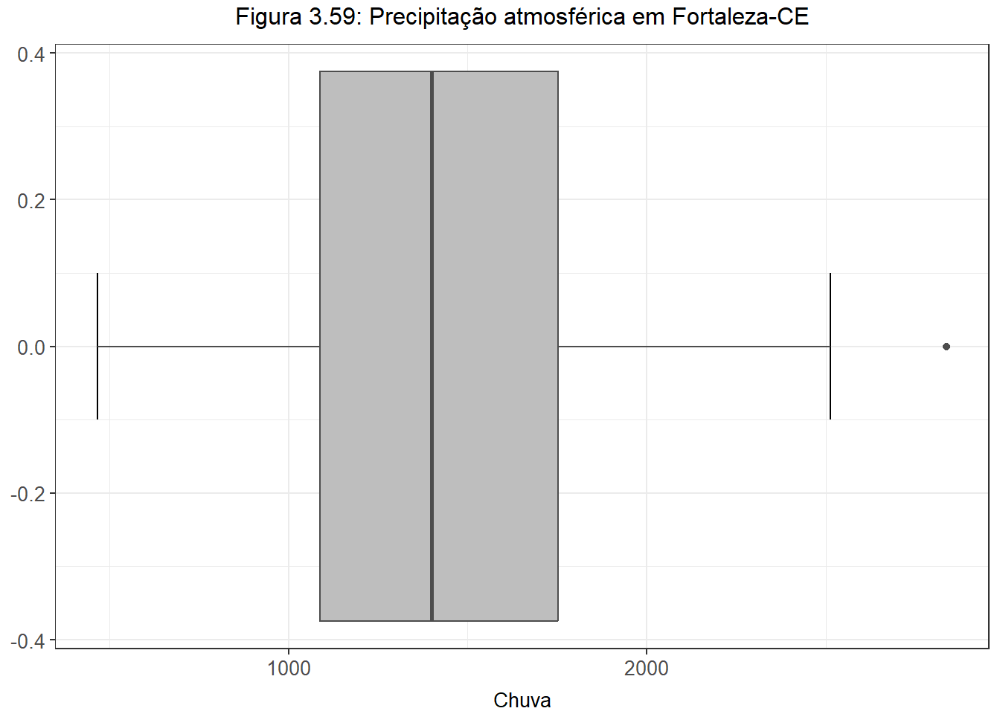
Para o gráfico de simetria (dispersão), temos o seguinte:
manchas %>%
ggplot() +
geom_symmetry(manchas$Número) +
geom_abline(aes(intercept = 0, slope = 1), color = "red", alpha = .5) +
labs(
title = "Figura 3.61: Gráfico de simetria para o número de manchas solares",
x = "Dispersão inferior",
y = "Dispersão superior"
) +
tema Os gráficos acima nos dão uma indicação de vele assimetria à direita. O que pode ser verificado com o Coef. de Assimetria de Fisher-Pearson Ajustado 0.8596009.
Os gráficos acima nos dão uma indicação de vele assimetria à direita. O que pode ser verificado com o Coef. de Assimetria de Fisher-Pearson Ajustado 0.8596009.
Exercício 3.11
Uma outra medida de assimetria é \[ A = \frac{(Q_{3} - Q_{2}) - (Q_{2} - Q_{1})}{Q_{3} - Q_{1}},\] que é iual a zero no caso de distribuições simétricas. Calcule-a para os dados do Exercício 3.4.
Solução. Primeiro vamos definir uma função para calcular a medida.
assimetria <- function(x) {
q <- quantile(x, c(0.25, 0.5, 0.75))
((q[[3]] - q[[2]]) - (q[[2]] - q[[1]]))/(q[[3]] - q[[1]])
}Usando essa função, temos que o coeficiente de assimetria para a variável vt do conjunto vento.xls é de 0.0788382.
Exercício 3.12
Os dados disponíveis no arquivo endometrione.xls (ABRÃO et al., 1997) são provenientes de um estudo em que o objetivo é verificar se existe diferença entre os grupos de doentes e controles quanto a algumas caracteristicas observadas.
- O pesquisador responsável pelo estudo tem a seguinte pergunta: pacientes doentes apresentam mais dor na menstruação do que as pacientes não doentes? Que tipo de análise você faria para responder essa pergunta utilizando as técnicas discutidas neste capitulo? Faça-a e tire suas conclusões.
- Compare as distribuições das variáveis idade e concentração de PCR durante a menstruação (
PCRa) para pacientes dos grupos controle e doente utilizando medidas resumo (minimo, máximo, quartis, mediana, média, desvio padrão, etc.), boxplots, histogramas, gráficos de médias e gráficos QQ. Como você considerou os valores \(< 0,5\) da variávelPCRanesses cálculos? Você sugeriria uma outra maneira para considerar tais valores? - Compare a distribuição da variável número de gestações para os dois grupos por intermédio de uma tabela de frequências. Utilize um método gráfico para representá-la.
Solução. Como sempre, vamos iniciar com o carregamento e ajuste nos dados:
endometriose <- readxl::read_xls(paste0(data_dir, "endometriose.xls"), sheet = "dados")
head(endometriose, 10)## # A tibble: 10 × 13
## Grupo Paciente Idade Gestação Partos Abortos Dismenorréia Dispareunia AFSr
## <chr> <dbl> <dbl> <dbl> <dbl> <dbl> <chr> <chr> <dbl>
## 1 Contro… 1 26 3 3 0 L N 0
## 2 Contro… 2 37 4 3 1 N P 0
## 3 Contro… 3 37 4 4 0 N N 0
## 4 Contro… 4 35 3 3 0 L N 0
## 5 Contro… 5 34 4 3 1 N N 0
## 6 Contro… 6 38 5 5 0 L N 0
## 7 Contro… 7 30 5 4 1 N N 0
## 8 Contro… 8 38 11 7 4 N N 0
## 9 Contro… 9 36 7 6 1 N N 0
## 10 Contro… 10 41 4 3 1 N N 0
## # ℹ 4 more variables: `CA125/A` <chr>, `CA125/B` <chr>, PCRa <chr>, PCRb <chr>Vamos transformar em fator as variáveis Grupo, Dismenorréia e Dispareunia. Vamos também ubstituir o valor <0,5 por zero nas variáveis CA125/A, CA125/B, PCRa e PCRb. Por fim, transformaremos em inteiras as variáveis Idade, Gestação, Partos, Abortos e AFSr.
dismenorreia_levels <- c("Não tem", "Leve", "Moderada", "Intensa", "Sem informação")
dismenorreia <- function(x) {
x %>%
str_replace("S/", "Sem informação") %>%
str_replace("N", "Não tem") %>%
str_replace("L", "Leve") %>%
str_replace("M", "Moderada") %>%
str_replace("I", "Intensa")
}
dispareunia <- function(x) {
x %>%
str_replace("\\.", "Sem informação") %>%
str_replace("N", "Não tem") %>%
str_replace("P\\b", "Penetração") %>%
str_replace("PRO", "Profunda") %>%
str_replace("2", "Penetração e Profunda")
}
zerar <- function(x) {
x %>%
str_replace("<0,5", "0")
}
endometriose <- endometriose %>%
mutate(
Grupo = parse_factor(Grupo),
Dismenorréia = parse_factor(dismenorreia(Dismenorréia), levels = dismenorreia_levels, ordered = TRUE),
Dispareunia = parse_factor(dispareunia(Dispareunia)),
`CA125/A` = parse_double(zerar(`CA125/A`)),
`CA125/B` = parse_double(zerar(`CA125/B`)),
PCRa = parse_double(zerar(PCRa)),
PCRb = parse_double(zerar(PCRb)),
Idade = as.integer(Idade),
Gestação = as.integer(Gestação),
Partos = as.integer(Partos),
Abortos = as.integer(Abortos),
AFSr = as.integer(AFSr)
)Pacientes doentes apresentam mais dor na menstruação do que as pacientes não doentes?
Em primeiro lugar, vamos construir uma tabela de contigência com os graus de dismenorréia entre os grupos.
endometriose %>%
group_by(Dismenorréia, Grupo) %>%
count() %>%
spread(Grupo, n) %>%
kable(
format = "pipe",
caption = "**Tabela 3.7:** Distribuição da ocorrência de dismenorréia entre casos e controles",
label = NA,
digits = 2,
align = "c",
format.args = list(decimal.mark = ","),
)| Dismenorréia | Controle | Doente |
|---|---|---|
| Não tem | 10 | - |
| Leve | 4 | 3 |
| Moderada | 1 | 14 |
| Intensa | - | 17 |
| Sem informação | - | 1 |
Através da Tabela 3.7, é possível perceber que 88,57% das pacientes com endometriose apresentam dor moderada ou intensa, contra apenas 6,67% das pacientes que não apresentam esta condição. Ou seja, as pacientes com a doença apresentam mais dor na mestruação do que as demais.
Distribuição das variáveis Idade e PCRa entre os grupos
Primeiro vamos calcular as medidas globais de resumo para cada uma das variáveis.
endometriose %>%
select(Idade, PCRa) %>%
map(summ) %>%
as.data.frame() %>%
t() %>%
kable(
format = "pipe",
caption = "**Tabela 3.8:** Medidas de resumo para as variáveis `Idade` e `PCRa`",
label = NA,
digits = 2,
align = "c",
format.args = list(decimal.mark = ",")
)| n | Mínimo | Q1 | Mediana | Q3 | Máximo | Média | Desvio Padrão | Distância Interquartil | |
|---|---|---|---|---|---|---|---|---|---|
| Idade | 50 | 20 | 27,00 | 32,00 | 37,0 | 43 | 32,04 | 5,76 | 10,00 |
| PCRa | 50 | 0 | 1,27 | 3,55 | 6,9 | 32 | 6,33 | 8,06 | 5,62 |
Para o grupo de controle, temos o seguinte:
endometriose %>%
filter(Grupo == "Controle") %>%
select(Idade, PCRa) %>%
map(summ) %>%
as.data.frame() %>%
t() %>%
kable(
format = "pipe",
caption = "**Tabela 3.9:** Medidas de resumo para o grupo de controle",
label = NA,
digits = 2,
align = "c",
format.args = list(decimal.mark = ",")
)| n | Mínimo | Q1 | Mediana | Q3 | Máximo | Média | Desvio Padrão | Distância Interquartil | |
|---|---|---|---|---|---|---|---|---|---|
| Idade | 15 | 26 | 33 | 36,0 | 37,5 | 41,0 | 35,13 | 3,80 | 4,5 |
| PCRa | 15 | 0 | 0 | 1,2 | 2,3 | 3,8 | 1,35 | 1,44 | 2,3 |
Para o grupo de casos, obtemos as seguintes medidas:
endometriose %>%
filter(Grupo == "Doente") %>%
select(Idade, PCRa) %>%
map(summ) %>%
as.data.frame() %>%
t() %>%
kable(
format = "pipe",
caption = "**Tabela 3.10:** Medidas de resumo para o grupo de casos",
label = NA,
digits = 2,
align = "c",
format.args = list(decimal.mark = ",")
)| n | Mínimo | Q1 | Mediana | Q3 | Máximo | Média | Desvio Padrão | Distância Interquartil | |
|---|---|---|---|---|---|---|---|---|---|
| Idade | 35 | 20 | 26,5 | 29,0 | 35,5 | 43 | 30,71 | 5,98 | 9,0 |
| PCRa | 35 | 0 | 3,2 | 4,6 | 12,5 | 32 | 8,46 | 8,79 | 9,3 |
Vamos também construir alguns gráficos para visualizar melhor os dados:
endometriose %>%
ggplot(aes(Idade)) +
geom_histogram(
binwidth = 4,
fill = "grey",
color = "grey30"
) +
facet_wrap(~Grupo) +
labs(
title = "Figura 3.62: Distribuição da idade entre pacientes",
x = "Idade",
y = "Quantidade"
) +
tema
endometriose %>%
ggplot(aes(Grupo, Idade)) +
stat_boxplot(
geom = "errorbar",
width = 0.2
) +
geom_boxplot(
fill = "grey",
color = "grey30"
) +
labs(
title = "Figura 3.63: Distribuição da idade entre pacientes",
y = "Quantidade"
) +
temaendometriose %>%
ggplot(aes(PCRa)) +
geom_histogram(
binwidth = 4,
fill = "grey",
color = "grey30"
) +
facet_wrap(~Grupo) +
labs(
title = "Figura 3.64: Distribuição da variável `PCRa` entre pacientes",
x = "PCRa",
y = "Quantidade"
) +
temaendometriose %>%
ggplot(aes(Grupo, PCRa)) +
stat_boxplot(
geom = "errorbar",
width = 0.2
) +
geom_boxplot(
fill = "grey",
color = "grey30"
) +
labs(
title = bquote(bold("Figura 3.65:")~"Distribuição da variável `PCRa` entre pacientes"),
y = "Quantidade"
) +
tema
Notamos com esses dados que a idade das pacientes com endrometriose varia de 20 a 43 anos, com média de 30,71 anos e desvio padrão de 5,98 anos. Já entre o grupo de controle, a variação de idade é menos (entre 26 e 41 anos), com média de 35,13 anos e desvio padrão de 3,80 anos.
Para a variável PCRa, temos uma discrepância considerável. Mulheres com endometriose tem uma concentração de mais de 6 vezes maior de PCR durante a menstruação do que as pacientes do grupo de controle.
Optamos por zerar o valor das observações cuja medida foi $ < 0,5$. Uma vez que 0,5 é o menor valor que o instrumento de aferição consegue detectar, entendemos ser justo considerar essas medidas como nula. Seria uma opção desconsiderar essas medidas? Cabe avaliar.
Comparando o número de gestações entre os grupos
endometriose %>%
group_by(Grupo, Gestação) %>%
count() %>%
pivot_wider(names_from = Grupo, values_from = n, values_fill = 0) %>%
arrange(Gestação)## # A tibble: 10 × 3
## # Groups: Gestação [10]
## Gestação Controle Doente
## <int> <int> <int>
## 1 0 0 18
## 2 1 0 9
## 3 2 0 4
## 4 3 5 2
## 5 4 4 0
## 6 5 2 1
## 7 6 1 0
## 8 7 2 0
## 9 9 0 1
## 10 11 1 0Vamos também representar graficamente a relação entre os grupos usando um boxplot.
endometriose %>%
ggplot(aes(x = Grupo, y = Gestação)) +
stat_boxplot(
geom = "errorbar",
width = 0.2
) +
geom_boxplot(
fill = "grey",
color = "grey30"
) +
labs(
title = bquote(bold("Figura 3.66:")~"Número de gestações entre mulheres com e sem endometriose"),
x = "Grupo",
y = "Número de gestações"
) +
tema
Notamos que o número de gestações entre mulheres com endometriose é muito menor do que entre as mulheres do grupo controle. Uma parte desse efeito poderia ser explicado pela idade das pacientes (a média de idade das pacientes com endometriose é menor do que as do grupo de controle), mas certamente a doença em si é o maior fator pra o menor número de gestações.
Exercício 3.13
Os dados encontrados no arquivo enforco.xls (BRAGA, 1998) são provenientes de um estudo sobre teste de esforço cardiopulmonar em pacientes com insuficiência cardíaca. As variáveis medidas durante a realização do teste foram observadas em quatro momentos distintos: repouso (REP), limiar anaeróbico (LAN), ponto de compensação respiratório (PCR) e pico (PICO). As demais variáveis são referentes às características demográficas e clinicas dos pacientes e foram registras uma única vez.
- Descreva a distribuição da variável consumo de oxigênio (
VO2) em cada um dos quatro momentos de avaliação utilizando medidas resumo (mínimo, máximo, quartis, mediana, média, desvio padrão, etc.), boxplots e histogramas. Você identifica algum paciente com valores de consumo de oxigênio discrepantes? Interprete os resultados. - Descreva a distribuição da classe funcional NYHA por meio de uma tabela de frequências. Utilize um método gráfico para representar essa tabela.
Solução.
Preparação dos dados
Iniciaremos carregando os dados e ajustando os nomes das colunas.
esforco <- readxl::read_xls(paste0(data_dir, "esforco.xls"), sheet = "dados", skip = 3, col_names = FALSE)
colnames(esforco) <- c(
"id_grupo", "iniciais", "etiologia", "sexo", "data_espirometrico",
"idade", "altura", "peso", "superficie_corporal", "imc",
"nyha", "weber", "fc_rep", "vo2_rep", "rer_rep", "vo2_fc_rep",
"ve_vo2_rep", "ve_vco2_rep", "aumento_carga_rep", "teste_maximo_rep",
"carga_lan", "perc_max_carga_lan", "fc_lan", "vo2_lan",
"perc_max_vo2_lan", "rer_lan", "perc_max_rer_lan", "vo2_fc_lan",
"perc_max_vo2_fc_lan", "ve_vo2_lan", "perc_max_ve_vo2_lan",
"ve_vco2_lan", "perc_max_ve_vco2_lan", "carga_pcr", "perc_max_carga_pcr",
"fc_pcr", "vo2_pcr", "perc_max_vo2_pcr", "rer_pcr", "perc_max_rer_pcr",
"vo2_fc_pcr", "perc_max_vo2_fc_pcr", "ve_vo2_pcr", "perc_max_ve_vo2_pcr",
"ve_vco2_pcr", "perc_max_ve_vco2_pcr", "carga_w", "fc_w",
"vo2_w", "rer_w", "vo2_fc_w", "ve_vo2_w", "ve_vco2_w",
"tempo_rampa", "vo2_wr_slope", "ve_vco2_slope", "data_obito",
"data_ultima_obs", "cirurgia"
)Vamos também criar algumas funções que nos ajudarão a ajustar os dados.
map_etiologia <- function(x) {
x %>%
str_replace("CH\\b", "Chagasíaco") %>%
str_replace("ID\\b", "Idiopático") %>%
str_replace("IS\\b", "Isquêmico") %>%
str_replace("C\\b", "Controle")
}
map_sexo <- function(x) {
x %>%
str_replace("M", "Masculino") %>%
str_replace("F", "Feminino")
}
map_sim_nao_na <- function(x) {
x %>%
str_replace("S", "Sim") %>%
str_replace("N", "Não") %>%
str_replace("\\.", NA_character_)
}Agora vamos aos ajustes:
esforco <- esforco %>%
mutate(
id = ifelse(etiologia == 'C', id_grupo + 87, id_grupo),
grupo = parse_factor(ifelse(etiologia == 'C', "Controle", "Caso")),
id_grupo = as.integer(id_grupo),
etiologia = parse_factor(map_etiologia(etiologia)),
sexo = parse_factor(map_sexo(sexo)),
data_espirometrico = dmy(data_espirometrico),
idade = as.integer(idade),
altura = as.integer(altura),
nyha = parse_factor(as.character(nyha), levels = c("1", "2", "3", "4"), ordered = TRUE, na = "0"),
weber = parse_factor(weber, levels = c("A", "B", "C", "D", "E", NA), ordered = TRUE),
teste_maximo_rep = parse_factor(map_sim_nao_na(teste_maximo_rep)),
carga_lan = parse_integer(carga_lan, na = "."),
perc_max_carga_lan = parse_double(perc_max_carga_lan, na = "."),
fc_lan = parse_double(fc_lan, na = "."),
vo2_lan = parse_double(vo2_lan, na = "."),
perc_max_vo2_lan = parse_double(perc_max_vo2_lan, na = "."),
rer_lan = parse_double(rer_lan, na = "."),
perc_max_rer_lan = parse_double(perc_max_rer_lan, na = "."),
vo2_fc_lan = parse_double(vo2_fc_lan, na = "."),
perc_max_vo2_fc_lan = parse_double(perc_max_vo2_fc_lan, na = "."),
ve_vo2_lan = parse_double(ve_vo2_lan, na = "."),
perc_max_ve_vo2_lan = parse_double(perc_max_ve_vo2_lan, na = "."),
ve_vco2_lan = parse_double(ve_vco2_lan, na = "."),
perc_max_ve_vco2_lan = parse_double(perc_max_ve_vco2_lan, na = "."),
carga_pcr = parse_double(carga_pcr, na = "."),
perc_max_carga_pcr = parse_double(perc_max_carga_pcr, na = "."),
fc_pcr = parse_double(fc_pcr, na = "."),
vo2_pcr = parse_double(vo2_pcr, na = "."),
perc_max_vo2_pcr = parse_double(perc_max_vo2_pcr, na = "."),
rer_pcr = parse_double(rer_pcr, na = "."),
perc_max_rer_pcr = parse_double(perc_max_rer_pcr, na = "."),
vo2_fc_pcr = parse_double(vo2_fc_pcr, na = "."),
perc_max_vo2_fc_pcr = parse_double(perc_max_vo2_fc_pcr, na = "."),
ve_vo2_pcr = parse_double(ve_vo2_pcr, na = "."),
perc_max_ve_vo2_pcr = parse_double(perc_max_ve_vo2_pcr, na = "."),
ve_vco2_pcr = parse_double(ve_vco2_pcr, na = "."),
perc_max_ve_vco2_pcr = parse_double(perc_max_ve_vco2_pcr, na = "."),
carga_w = parse_double(carga_w, na = "."),
tempo_rampa = parse_double(tempo_rampa, na = "."),
vo2_wr_slope = parse_double(vo2_wr_slope, na = "."),
data_obito = dmy(data_obito),
data_ultima_obs = dmy(data_ultima_obs)
)## Warning: There was 1 warning in `mutate()`.
## ℹ In argument: `data_obito = dmy(data_obito)`.
## Caused by warning:
## ! 47 failed to parse.Com o arquivo organizado, vamos salvá-lo para uso futuro como esforco_completo.csv.
Consumo de oxigênio nos quatro momentos
Inicialmente precisamos destacar que as variáveis de interesse são vo2_rep, vo2_lan, vo2_pcr e vo2_w. Vamos isolar essas variáveis e utilizar a função gather() para reunir os dados dos momentos em um formato mais amigável.
vo2 <- esforco %>%
select(id, grupo, vo2_rep, vo2_lan, vo2_pcr, vo2_w) %>%
gather(vo2_rep, vo2_lan, vo2_pcr, vo2_w, key = "Momento", value = "vo2") %>%
mutate (
Momento = Momento %>%
str_replace("vo2_rep", "Repouso") %>%
str_replace("vo2_lan", "Limiar anaeróbico") %>%
str_replace("vo2_pcr", "Ponto de Compensação") %>%
str_replace("vo2_w", "Pico")
)
head(vo2)## # A tibble: 6 × 4
## id grupo Momento vo2
## <dbl> <fct> <chr> <dbl>
## 1 1 Caso Repouso 5.9
## 2 2 Caso Repouso 3.4
## 3 3 Caso Repouso 3
## 4 4 Caso Repouso 3.8
## 5 5 Caso Repouso 3.2
## 6 6 Caso Repouso 3.8Agora vamos avaliar a disbtibuição da variável vo2 em cada um dos momentos:
vo2 %>%
ggplot(aes(vo2)) +
geom_histogram(
fill = "grey",
color = "grey30"
) +
facet_wrap(~Momento) +
labs(
title = bquote(bold("Figura 3.67:")~"Consumo de oxigênio durante teste de esforço"),
x = "Consumo de oxigênio - ml/(kg.min)",
y = "Frequência"
) +
tema## `stat_bin()` using `bins = 30`. Pick better value with `binwidth`.## Warning: Removed 9 rows containing non-finite values (`stat_bin()`).vo2 %>%
ggplot(aes(
x = factor(Momento, level = c("Repouso", "Limiar anaeróbico", "Ponto de Compensação", "Pico")),
y = vo2
)) +
stat_boxplot(
geom = "errorbar",
width = 0.2
) +
geom_boxplot(
fill = "grey",
color = "grey30"
) +
labs(
title = bquote(bold("Figura 3.68:")~"Consumo de oxigênio durante teste de esforço"),
x = "Momento do teste",
y = "Consumo de oxigênio - ml/(kg.min)"
) +
tema## Warning: Removed 9 rows containing non-finite values (`stat_boxplot()`).
## Removed 9 rows containing non-finite values (`stat_boxplot()`).Vamos calcular também a média e desvio padrão para o consumo de oxigênio em cada momento:
resumo <- vo2 %>%
group_by(Momento, grupo) %>%
summarise(
`Média` = mean(vo2, na.rm = TRUE),
`Desvio Padrão` = sd(vo2, na.rm = TRUE),
Q1 = quantile(vo2, 0.25, na.rm = TRUE)[[1]],
`Mediana` = median(vo2, na.rm = TRUE),
Q3 = quantile(vo2, 0.75, na.rm = TRUE)[[1]],
`Distância Interquartil` = IQR(vo2, na.rm = TRUE)
) %>%
arrange(factor(Momento, level = c("Repouso", "Limiar anaeróbico", "Ponto de Compensação", "Pico")))## `summarise()` has grouped output by 'Momento'. You can override using the
## `.groups` argument.resumo %>%
kable(
format = "pipe",
caption = "**Tabela 3.11:** Consumo de oxigênio por momento de avaliação",
label = NA,
digits = 2,
align = "c",
format.args = list(decimal.mark = ",")
)| Momento | grupo | Média | Desvio Padrão | Q1 | Mediana | Q3 | Distância Interquartil |
|---|---|---|---|---|---|---|---|
| Repouso | Caso | 3,58 | 0,91 | 3,00 | 3,40 | 3,95 | 0,95 |
| Repouso | Controle | 3,50 | 0,60 | 3,00 | 3,45 | 3,85 | 0,85 |
| Limiar anaeróbico | Caso | 9,98 | 2,73 | 8,47 | 9,70 | 11,03 | 2,55 |
| Limiar anaeróbico | Controle | 11,53 | 2,84 | 9,60 | 10,85 | 13,77 | 4,17 |
| Ponto de Compensação | Caso | 13,32 | 4,05 | 10,60 | 12,80 | 15,10 | 4,50 |
| Ponto de Compensação | Controle | 17,68 | 4,67 | 13,83 | 16,15 | 21,50 | 7,67 |
| Pico | Caso | 15,78 | 5,43 | 12,15 | 14,50 | 18,45 | 6,30 |
| Pico | Controle | 23,00 | 5,82 | 18,28 | 22,75 | 27,72 | 9,45 |
Os gráficos nos mostram que alguns pacientes possuem um consumo excessivamente alto de oxigênio. Apesar desses valores, os dados parecem apresentar tendência normal. Notamos ainda uma menor consumo de oxigênio para o grupo de pacientes com alguma doença pré-existente.
Abaixo, listamos os identificadores dos valores discrepantes.
resumo2 <- resumo %>%
transmute(
m = Momento,
l = Q3 + 1.5 * `Distância Interquartil`
)
vo2 %>%
left_join(resumo2, by = join_by(Momento == m)) %>%
filter(vo2 > l) %>%
select(id) %>%
distinct() %>%
array()## Warning in left_join(., resumo2, by = join_by(Momento == m)): Detected an unexpected many-to-many relationship between `x` and `y`.
## ℹ Row 1 of `x` matches multiple rows in `y`.
## ℹ Row 1 of `y` matches multiple rows in `x`.
## ℹ If a many-to-many relationship is expected, set `relationship =
## "many-to-many"` to silence this warning.## [[1]]
## [1] 1 29 32 52 85 34 38 42 45 95 96 103 106 109 122 123 18 91 104
## [20] 111 115 126 101 110 127Exercício 3.14
Na tabela abaixo estão indicadas as durações de 335 lâmpadas.
| Duração (horas) | Número de lâmpadas |
|---|---|
| \(0 \vdash 100\) | 82 |
| \(100 \vdash 200\) | 71 |
| \(200 \vdash 300\) | 68 |
| \(300 \vdash 400\) | 56 |
| \(400 \vdash 500\) | 43 |
| \(500 \vdash 800\) | 15 |
- Esboce o histograma correspondente.
- Calcule os quantis de ordem \(p = 0,1, 0,3, 0,5, 0,7\) e \(0,9\).
Solução. Vamos começar colocando os dados da tabela em um data frame.
lampadas <- tribble(
~min, ~max, ~freq,
0, 99, 82,
100, 199, 71,
200, 299, 68,
300, 399, 56,
400, 499, 43,
500, 599, 15
)Vamos agora adicionar a frequência relativa e a frequência acumulada ao nosso data frame:
lampadas <- lampadas %>%
mutate(
freq_acu = cumsum(freq),
freq_rel = freq/sum(freq),
freq_rel_acu = cumsum(freq_rel)
)
lampadas## # A tibble: 6 × 6
## min max freq freq_acu freq_rel freq_rel_acu
## <dbl> <dbl> <dbl> <dbl> <dbl> <dbl>
## 1 0 99 82 82 0.245 0.245
## 2 100 199 71 153 0.212 0.457
## 3 200 299 68 221 0.203 0.660
## 4 300 399 56 277 0.167 0.827
## 5 400 499 43 320 0.128 0.955
## 6 500 599 15 335 0.0448 1Com os dados organizados podemos construir o histograma:
lampadas %>%
ggplot(aes(x = min + 50, y = freq)) +
geom_col(
fill = "grey",
color = "grey30"
) +
scale_x_continuous(
breaks = seq(0, 600, 100)
) +
labs(
title = bquote(bold("Figura 3.69:")~"Tempo de vida das lâmpadas"),
x = "Tempo de vida (h)",
y = "Frequência observada"
) +
tema Para calcular o quantil de ordem \(p\), vamos seguir dois passos:
Para calcular o quantil de ordem \(p\), vamos seguir dois passos:
- utilizar a tabela de frequência para identificar a classe \(k\) à qual pertence o quantil de ordem \(p\);
- utilizar a fomula \[ Q_{p} = l_{k} + \frac{( p \cdot n - F_{k-1} ) \cdot h_{k}}{f_{k}} \] onde:
- \(l_{i}\) é o limite inferior da classe \(i\);
- \(f_{i}\) é a frequência absoluta da classe \(i\);
- \(F_{i}\) é a frequência acumulada até a classe \(i\);
- \(h_{i}\) é a amplitude da classe \(i\);
- \(n\) é o tamanho da amostra;
Vamos definir uma função para calcular o quantil:
Agora temos condições de calcular os quantis:
n <- sum(lampadas$freq)
h <- 100
tibble(
p = c(.1, .3, .5, .7, .9),
l = c(0, 100, 200, 300, 400),
f_p = c(82, 71, 68, 56, 43),
f_ant = c(0, 82, 153, 221, 277)
) %>%
mutate(
Q_p = quantil(l, p, n, f_p, f_ant, h)
) %>%
select(p, Q_p) %>%
kable(
format = "pipe",
caption = "**Tabela 3.12:** Quantis para a vida útil de lâmpadas",
label = NA,
digits = 2,
align = "c",
format.args = list(decimal.mark = ",")
)| p | Q_p |
|---|---|
| 0,1 | 40,85 |
| 0,3 | 126,06 |
| 0,5 | 221,32 |
| 0,7 | 324,11 |
| 0,9 | 456,98 |
Exercício 3.15
Os dados apresentados na tabela abaixo referem-se aos instantes nos quais o centro de controle operacional de estradas rodoviárias recebeu chamados solicitando algum tipo de auxilio em duas estradas num determinado dia.
| Estrada 1 | 12:07:00 AM | 12:58:00 AM | 01:24:00 AM | 01:35:00 AM | 02:05:00 AM |
| 03:14:00 AM | 03:25:00 AM | 03:46:00 AM | 05:44:00 AM | 05:56:00 AM | |
| 06:36:00 AM | 07:26:00 AM | 07:48:00 AM | 09:13:00 AM | 12:05:00 PM | |
| 12:48:00 PM | 01:21:00 PM | 02:22:00 PM | 05:30:00 PM | 06:00:00 PM | |
| 07:53:00 PM | 09:15:00 PM | 09:49:00 PM | 09:59:00 PM | 10:53:00 PM | |
| 11:27:00 PM | 11:49:00 PM | 11:57:00 PM | |||
| Estrada 2 | 12:03:00 AM | 01:18:00 AM | 04:35:00 AM | 06:13:00 AM | 06:59:00 AM |
| 08:03:00 AM | 10:07:00 AM | 12:24:00 PM | 01:45:00 PM | 02:07:00 PM | |
| 03:23:00 PM | 06:34:00 PM | 07:19:00 PM | 09:44:00 PM | 10:27:00 PM | |
| 10:52:00 PM | 11:19:00 PM | 11:29:00 PM | 11:44:00 PM |
- Construa um histograma para a distribuição de frequências dos instantes de chamados em cada uma das estradas.
- Calcule os intervalos de tempo entre as sucessivas chamadas e descreva-os, para cada uma das estradas, utilizando medidas resumo e gráficos do tipo boxplot. Existe alguma relação entre o tipo de estrada e o intervalo de tempo entre as chamadas?
- Por intermédio de um gráfico do tipo QQ, verifique se a distribuição da variável
Intervalo de tempo entre as chamadasem cada estrada é compatível com um modelo normal. Faça o mesmo para um modelo exponencial. Compare as distribuições de frequências correspondentes às duas estradas.
Solução. Em primeiro lugar, precisamos arrumar os dados em um formato mais tangível.
chamadas <- tribble(
~estrada, ~horario,
"Estrada 1", "00:07:00 AM",
"Estrada 1", "00:58:00 AM",
"Estrada 1", "01:24:00 AM",
"Estrada 1", "01:35:00 AM",
"Estrada 1", "02:05:00 AM",
"Estrada 1", "03:14:00 AM",
"Estrada 1", "03:25:00 AM",
"Estrada 1", "03:46:00 AM",
"Estrada 1", "05:44:00 AM",
"Estrada 1", "05:56:00 AM",
"Estrada 1", "06:36:00 AM",
"Estrada 1", "07:26:00 AM",
"Estrada 1", "07:48:00 AM",
"Estrada 1", "09:13:00 AM",
"Estrada 1", "12:05:00 PM",
"Estrada 1", "12:48:00 PM",
"Estrada 1", "01:21:00 PM",
"Estrada 1", "02:22:00 PM",
"Estrada 1", "05:30:00 PM",
"Estrada 1", "06:00:00 PM",
"Estrada 1", "07:53:00 PM",
"Estrada 1", "09:15:00 PM",
"Estrada 1", "09:49:00 PM",
"Estrada 1", "09:59:00 PM",
"Estrada 1", "10:53:00 PM",
"Estrada 1", "11:27:00 PM",
"Estrada 1", "11:49:00 PM",
"Estrada 1", "11:57:00 PM",
"Estrada 2", "00:03:00 AM",
"Estrada 2", "01:18:00 AM",
"Estrada 2", "04:35:00 AM",
"Estrada 2", "06:13:00 AM",
"Estrada 2", "06:59:00 AM",
"Estrada 2", "08:03:00 AM",
"Estrada 2", "10:07:00 AM",
"Estrada 2", "12:24:00 PM",
"Estrada 2", "01:45:00 PM",
"Estrada 2", "02:07:00 PM",
"Estrada 2", "03:23:00 PM",
"Estrada 2", "06:34:00 PM",
"Estrada 2", "07:19:00 PM",
"Estrada 2", "09:44:00 PM",
"Estrada 2", "10:27:00 PM",
"Estrada 2", "10:52:00 PM",
"Estrada 2", "11:19:00 PM",
"Estrada 2", "11:29:00 PM",
"Estrada 2", "11:44:00 PM"
) %>%
mutate(
horario = parse_time(horario)
)Intervalo entre as chamadas
Primeiro precisamos calcular a diferença de tempo entre as chamadas. Para isso vamos adicionar uma coluna em nosso conjunto de dados contendo o horário da chamada anterior e outra contendo a diferença.
chamadas$anterior = parse_time("00:00:00 AM")
n_1 <- chamadas %>%
filter(estrada == "Estrada 1") %>%
nrow()
n_2 <- chamadas %>%
filter(estrada == "Estrada 2") %>%
nrow()
for (i in 2:n_1) {
chamadas$anterior[i] <- chamadas$horario[i-1]
}
for (i in 2:n_2) {
chamadas$anterior[i + n_1] <- chamadas$horario[i + n_1 -1]
}
chamadas$intervalo <- as.duration(chamadas$horario - chamadas$anterior)A tabela a seguir mostra o resultado desses cálculos.
chamadas %>%
kable(
format = "pipe",
caption = "**Tabela 3.14:** Chamadas de auxílio em duas estradas",
label = NA,
digits = 2,
align = "c",
format.args = list(decimal.mark = ",")
)| estrada | horario | anterior | intervalo |
|---|---|---|---|
| Estrada 1 | 00:07:00 | 00:00:00 | 420s (~7 minutes) |
| Estrada 1 | 00:58:00 | 00:07:00 | 3060s (~51 minutes) |
| Estrada 1 | 01:24:00 | 00:58:00 | 1560s (~26 minutes) |
| Estrada 1 | 01:35:00 | 01:24:00 | 660s (~11 minutes) |
| Estrada 1 | 02:05:00 | 01:35:00 | 1800s (~30 minutes) |
| Estrada 1 | 03:14:00 | 02:05:00 | 4140s (~1.15 hours) |
| Estrada 1 | 03:25:00 | 03:14:00 | 660s (~11 minutes) |
| Estrada 1 | 03:46:00 | 03:25:00 | 1260s (~21 minutes) |
| Estrada 1 | 05:44:00 | 03:46:00 | 7080s (~1.97 hours) |
| Estrada 1 | 05:56:00 | 05:44:00 | 720s (~12 minutes) |
| Estrada 1 | 06:36:00 | 05:56:00 | 2400s (~40 minutes) |
| Estrada 1 | 07:26:00 | 06:36:00 | 3000s (~50 minutes) |
| Estrada 1 | 07:48:00 | 07:26:00 | 1320s (~22 minutes) |
| Estrada 1 | 09:13:00 | 07:48:00 | 5100s (~1.42 hours) |
| Estrada 1 | 12:05:00 | 09:13:00 | 10320s (~2.87 hours) |
| Estrada 1 | 12:48:00 | 12:05:00 | 2580s (~43 minutes) |
| Estrada 1 | 13:21:00 | 12:48:00 | 1980s (~33 minutes) |
| Estrada 1 | 14:22:00 | 13:21:00 | 3660s (~1.02 hours) |
| Estrada 1 | 17:30:00 | 14:22:00 | 11280s (~3.13 hours) |
| Estrada 1 | 18:00:00 | 17:30:00 | 1800s (~30 minutes) |
| Estrada 1 | 19:53:00 | 18:00:00 | 6780s (~1.88 hours) |
| Estrada 1 | 21:15:00 | 19:53:00 | 4920s (~1.37 hours) |
| Estrada 1 | 21:49:00 | 21:15:00 | 2040s (~34 minutes) |
| Estrada 1 | 21:59:00 | 21:49:00 | 600s (~10 minutes) |
| Estrada 1 | 22:53:00 | 21:59:00 | 3240s (~54 minutes) |
| Estrada 1 | 23:27:00 | 22:53:00 | 2040s (~34 minutes) |
| Estrada 1 | 23:49:00 | 23:27:00 | 1320s (~22 minutes) |
| Estrada 1 | 23:57:00 | 23:49:00 | 480s (~8 minutes) |
| Estrada 2 | 00:03:00 | 00:00:00 | 180s (~3 minutes) |
| Estrada 2 | 01:18:00 | 00:03:00 | 4500s (~1.25 hours) |
| Estrada 2 | 04:35:00 | 01:18:00 | 11820s (~3.28 hours) |
| Estrada 2 | 06:13:00 | 04:35:00 | 5880s (~1.63 hours) |
| Estrada 2 | 06:59:00 | 06:13:00 | 2760s (~46 minutes) |
| Estrada 2 | 08:03:00 | 06:59:00 | 3840s (~1.07 hours) |
| Estrada 2 | 10:07:00 | 08:03:00 | 7440s (~2.07 hours) |
| Estrada 2 | 12:24:00 | 10:07:00 | 8220s (~2.28 hours) |
| Estrada 2 | 13:45:00 | 12:24:00 | 4860s (~1.35 hours) |
| Estrada 2 | 14:07:00 | 13:45:00 | 1320s (~22 minutes) |
| Estrada 2 | 15:23:00 | 14:07:00 | 4560s (~1.27 hours) |
| Estrada 2 | 18:34:00 | 15:23:00 | 11460s (~3.18 hours) |
| Estrada 2 | 19:19:00 | 18:34:00 | 2700s (~45 minutes) |
| Estrada 2 | 21:44:00 | 19:19:00 | 8700s (~2.42 hours) |
| Estrada 2 | 22:27:00 | 21:44:00 | 2580s (~43 minutes) |
| Estrada 2 | 22:52:00 | 22:27:00 | 1500s (~25 minutes) |
| Estrada 2 | 23:19:00 | 22:52:00 | 1620s (~27 minutes) |
| Estrada 2 | 23:29:00 | 23:19:00 | 600s (~10 minutes) |
| Estrada 2 | 23:44:00 | 23:29:00 | 900s (~15 minutes) |
Com essas informações em mãos, podemos calcular as medidas de resumo para cada uma das estradas.
summ_data <- function(data) {
x <- data$intervalo
tibble(
n = sum(!is.na(x), na.rm = TRUE),
`Mínimo` = as.duration(min(x, na.rm = TRUE)),
Q1 = as.duration(quantile(x, 0.25, na.rm = TRUE)[[1]]),
`Mediana` = as.duration(median(x, na.rm = TRUE)),
Q3 = as.duration(quantile(x, 0.75, na.rm = TRUE)[[1]]),
`Máximo` = as.duration(max(x, na.rm = TRUE)),
`Média` = as.duration(mean(x, na.rm = TRUE)),
`Desvio Padrão` = as.duration(sd(x, na.rm = TRUE)),
`Distância Interquartil` = as.duration(IQR(x, na.rm = TRUE))
)
}
chamadas %>%
group_by(estrada) %>%
nest() %>%
mutate(
resumo = map(data, summ_data),
) %>%
select(-data) %>%
unnest(resumo) %>%
t() %>%
kable(
format = "pipe",
caption = "**Tabela 3.15:** Resumo do intervalo entre chamadas para as duas estradas",
label = NA,
digits = 2,
align = "c",
format.args = list(decimal.mark = ",")
)| estrada | Estrada 1 | Estrada 2 |
| n | 28 | 19 |
| Mínimo | 420s (~7 minutes) | 180s (~3 minutes) |
| Q1 | 1305s (~21.75 minutes) | 1560s (~26 minutes) |
| Mediana | 2040s (~34 minutes) | 3840s (~1.07 hours) |
| Q3 | 3780s (~1.05 hours) | 6660s (~1.85 hours) |
| Máximo | 11280s (~3.13 hours) | 11820s (~3.28 hours) |
| Média | 3079.28571428571s (~51.32 minutes) | 4496.84210526316s (~1.25 hours) |
| Desvio Padrão | 2820.26256798564s (~47 minutes) | 3565.35965558655s (~59.42 minutes) |
| Distância Interquartil | 2475s (~41.25 minutes) | 5100s (~1.42 hours) |
O gráfico a seguir mostra a distribuição do intervalo entre chamadas:
chamadas %>%
ggplot(aes(x = estrada, y = intervalo)) +
stat_boxplot(
geom = "errorbar",
width = 0.2
) +
geom_boxplot(
fill = "grey",
color = "grey30"
) +
labs(
title = bquote(bold("Figura 3.71:")~"Distribuição dos intervalos entre as chamadas"),
x = "",
y = "Intervalo (s)"
) +
tema#### O intervalo entre as chamadas segue alguma tendência normal ou exponencial? {-}
Vamos começar plotando o histograma dos intervalos de tempo:
chamadas %>%
ggplot(aes(intervalo)) +
geom_histogram(
binwidth = 900,
fill = "grey",
color = "grey30"
) +
facet_wrap(~ estrada) +
labs(
title = bquote(bold("Figura 3.72:")~"Intervalo de tempo entre as chamadas"),
x = "Intervalo (s)",
y = "Frequência"
) +
tema
Este gráfico não nos indica nenhuma tendência, vamos então construir o gráfico QQ para cada uma das estradas, primeiro comparando com a distribuição normal:
chamadas %>%
ggplot(aes(sample = intervalo)) +
geom_qq() +
geom_qq_line() +
facet_wrap(~ estrada) +
labs(
title = bquote(bold("Figura 3.73:")~"Intervalo de tempo entre as chamadas"),
x = "Quantis normais",
y = "Quantis amostrais"
) +
temaComo os dados estão muito afastados da reta de referência, não podemos dizer que os seguem a distribuição normal. Vamos tentar agora compará-los a uma distribuição exponencial.
chamadas %>%
ggplot(aes(sample = intervalo)) +
geom_qq(
distribution = stats::qexp
) +
geom_qq_line(
distribution = stats::qexp
) +
facet_wrap(~ estrada) +
labs(
title = bquote(bold("Figura 3.74:")~"Intervalo de tempo entre as chamadas"),
x = "Quantis exponenciais",
y = "Quantis amostrais"
) +
tema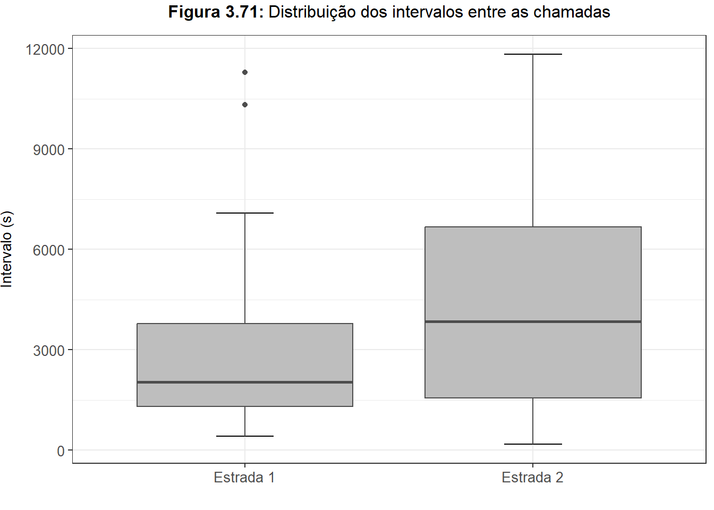
Notamos que os dados estão muito mais próximos da distribuição exponencial, exceto por alguns pontos extremos.
Exercício 3.16
As notas finais de um curso de Estatistica foram: 7, 5, 4, 5, 6, 3, 8, 4, 5, 4, 6, 4, 5, 6, 4, 6, 6, 3, 8, 4, 5, 4, 5, 5 e 6.
- Calcule a mediana, os quartis e a média.
- Separe o conjunto de dados em dois grupos denominados aprovados, com nota pelo menos igual a 5, e reprovados, com notas menores do que 5. Compare a variáncia das notas desses dois grupos.
Solução. Vamos organizar as notas em um data frame e incluir o status (Aprovado ou Reprovado) aos estudantes.
estatistica <- tibble(
nota = c(7, 5, 4, 5, 6, 3, 8, 4, 5, 4, 6, 4, 5, 6, 4, 6, 6, 3, 8, 4, 5, 4, 5, 5, 6)
) %>%
mutate(
status = ifelse(nota < 5, "Reprovado", "Aprovado")
)
head(estatistica)## # A tibble: 6 × 2
## nota status
## <dbl> <chr>
## 1 7 Aprovado
## 2 5 Aprovado
## 3 4 Reprovado
## 4 5 Aprovado
## 5 6 Aprovado
## 6 3 ReprovadoAgora podemos calcular as medidas de resumo:
estatistica$nota %>%
summ() %>%
kable(
format = "pipe",
caption = "**Tabela 3.16:** Medidas de resumo para as notas em estatística",
label = NA,
digits = 2,
align = "c",
format.args = list(decimal.mark = ",")
)| x | |
|---|---|
| n | 25,00 |
| Mínimo | 3,00 |
| Q1 | 4,00 |
| Mediana | 5,00 |
| Q3 | 6,00 |
| Máximo | 8,00 |
| Média | 5,12 |
| Desvio Padrão | 1,33 |
| Distância Interquartil | 2,00 |
Vamos agora comparar os grupos:
apr <- estatistica %>% filter(status == "Aprovado")
rep <- estatistica %>% filter(status == "Reprovado")A tabela a seguir mostra um resumo dos aprovados:
apr$nota %>%
summ() %>%
kable(
format = "pipe",
caption = "**Tabela 3.17:** Medidas de resumo para as notas dos aprovados em estatística",
label = NA,
digits = 2,
align = "c",
format.args = list(decimal.mark = ",")
)| x | |
|---|---|
| n | 16,00 |
| Mínimo | 5,00 |
| Q1 | 5,00 |
| Mediana | 6,00 |
| Q3 | 6,00 |
| Máximo | 8,00 |
| Média | 5,88 |
| Desvio Padrão | 1,02 |
| Distância Interquartil | 1,00 |
E a próxima tabela exibe um resumo para os reprovados:
rep$nota %>%
summ() %>%
kable(
format = "pipe",
caption = "**Tabela 3.18:** Medidas de resumo para as notas dos reprovados em estatística",
label = NA,
digits = 2,
align = "c",
format.args = list(decimal.mark = ",")
)| x | |
|---|---|
| n | 9,00 |
| Mínimo | 3,00 |
| Q1 | 4,00 |
| Mediana | 4,00 |
| Q3 | 4,00 |
| Máximo | 4,00 |
| Média | 3,78 |
| Desvio Padrão | 0,44 |
| Distância Interquartil | 0,00 |
Avaliando o desvio padrão, e o intervalo interquartil, percebemos que as notas dos reprovados são muito mais uniformes, isto é, apresentam menor variação. O mesmo pode ser constatado no gráfico a seguir.
Exercício 3.17
Considere o seguinte resumo descritivo da pulsação de estudantes com atividade fisica intensa e fraca:
| Atividade | N | Media | Mediana | DP | Min | Max | Q1 | Q3 |
|---|---|---|---|---|---|---|---|---|
| Intensa | 30 | 79,6 | 82 | 10,5 | 62 | 90 | 70 | 85 |
| Fraca | 30 | 73,1 | 70 | 9,6 | 58 | 92 | 63 | 77 |
Indique se as seguintes afirmações estão corretas, justificando a sua respostas:
- 5% e 50% dos estudantes com atividade fisica intensa e fraca, respectivamente, tiveram pulsação inferior a 70.
- A proporção de estudantes com fraca atividade fisica com pulsação inferior a 63 é menor que a proporção de estudantes com atividade fisica intensa com pulsação inferior a 70.
- A atividade fisica não tem efeito na média da pulsação dos estudantes.
- Mais da metade dos estudantes com atividade fisica intensa têm pulsação maior que 82.
Solução.
Item a
A tabela nos informa que o primeiro quartil entre o grupo que praticou atividade intensa é 70, logo, espera-se que 25% dos estudantes neste grupo tiveram pulsação inferior a 70 e não 5% como alegado no enunciado. Entre os estudantes que particaram atividade fraca, como a mediana é 70, espera-se que pelo menos a metade tenha pulsação menor do que 70 (note contudo, que podem haver mais o que 50% dos estudantes!).
Conclusão: o item é FALSO.
Item b
Considerando que o primeiro quartil vale 70 para o grupo de estudantes com atividade intensa e 63 para o grupo com atividade fraca, sabemos que pelo menos 25% dois estudantes de cada grupo estão abaixo desses valores.
Conclusão: a afirmação é FALSA.
item c
Considerando a o intervalo de confiança para a média como \([\bar{x} - s; \bar{x} + s]\), temos que a verdadeira média para o grupo com atividade intensa está entre 69,1 e 90,1 e, para o segundo grupo, entre 63,5 e 82,7. Como os intervalos não são disjuntos, não é possível afirmar que há diferença entre as médias.
Conclusão: a afirmativa é VERDADEIRA.
Exercício 3.18
Considere os gráficos boxplot da Figura 3.34. Quais deles correspondem às pulsações dos estudantes submetidos a atividade física intensa e fraca?
- A e B
- B e D
- A e C
- B e C
Solução. Analisando o gráfico, a correspondencia mais adequada seria A e D, que não está listada acima.
Exercício 3.19
Os histogramas apresentados na Figura 3.35 mostram a distribuição das temperaturas (°C) ao longo de vários dias de investigação para duas regiões (R1 e R2). Indique se as afirmações abaixo estão corretas, justificando as respostas:
- As temperaturas das regiões R1 e R2 têm mesma média e mesma variância.
- Não é possível comparar as variâncias.
- A temperatura média da região R2 é maior que a de R1.
- As temperaturas das regiões R1 e R2 têm mesma média e variância diferentes.
Solução. Vamos iniciar a análise considerando o ponto médio e a frequência das classes:
r1 <- c(10,10,10,10,10,10,12,12,12,12,14,16,16,16,16,18,18,18,18,18,18)
r2 <- c(10,10,10,10,12,12,12,12,14,14,14,14,14,16,16,16,16,18,18,18,18)
mean(r1)## [1] 14## [1] 3.34664## [1] 14## [1] 2.828427Item a
Temos a mesma média (14ºC), porém desvios padrão diferentes (3,35 para R1 e 2,83 para R2).
Conclusão: A afirmação é FALSA.
Exercício 3.20
Na companhia A, a média dos salários é 10000 unidades e o 3 quartil é 5000. Responda as seguintes perguntas, justificando a sua respostas:
- Se você se apresentasse como candidato a funcionário nessa firma e se o seu salário fosse escolhido ao acaso entre todos os possíveis salários, o que seria mais provável: ganhar mais ou menos que 5000 unidades?
- Suponha que na companhia B a média dos salários seja 7000 unidades, a variância praticamente zero e o salário também seja escolhido ao acaso. Em qual companhia você se apresentaria para procurar emprego, com base somente no salário?
Solução.
Item a
Como o terceiro quartil é maior do que ou igual a 75% dos valores, a probabilidade de ganhar menos do que 5000 é de, pelo menos 75%. Logo é mais provável que o salário não ultrapasse este valor.
Item b
Para melhor exemplificar, vamos simular uma distribuição com média 7000 e desvio padrão igual a 1/1000.
salario <- tibble(
x = rnorm(1000, mean = 7000, sd = 1/1000)
)
salario %>%
ggplot(aes(x = x)) +
geom_histogram(
fill = "grey",
color = "grey30"
) +
labs(
title = bquote(bold("Figura 3.76:")~"Distribuição dos salários na empresa B"),
x = "Salário",
y = "Frequência"
) +
tema## `stat_bin()` using `bins = 30`. Pick better value with `binwidth`.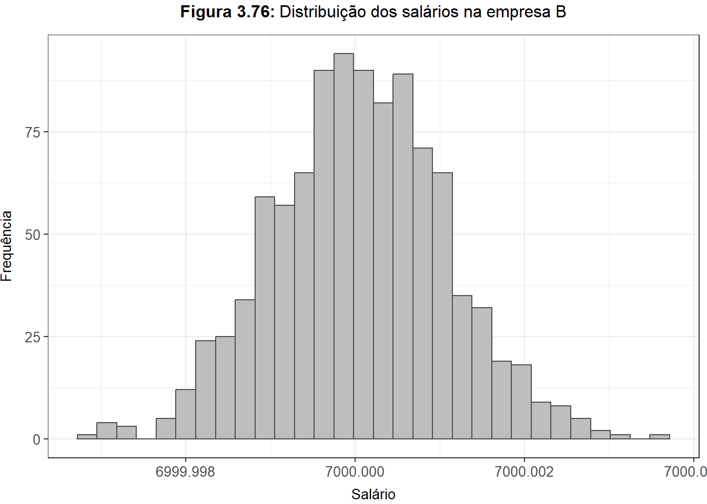
Como a dispersão é muito pequena, os valores estão super concentrados ao redor da média, neste caso, a probabilidade de o salário ser menor do que 5000 é quase nula, tornando a emprea B mais atrativa.
Exercício 3.21
Num conjunto de dados, o primeiro quartil é 10, a mediana é 15 e o terceiro quartil é 20. Indique quais das seguintes afirmativas são verdadeiras, justificando sua resposta:
- A distância interquartis é 5.
- O valor 32 seria considerado outlier segundo o critério utilizado na construção do boxplot.
- A mediana ficaria alterada de 2 unidades se um ponto com valor acima do terceiro quartil fosse substituído por outro 2 vezes maior.
- O valor mínimo é maior do que zero.
Solução.
A distância interquartis é 5
A afirmação é falsa, pois a distância interquartil é dada por \(d_Q = Q_3 - Q_1\), logo, para o nosso exemplo, \(d_Q = 20 - 10 = 10\).
O valor 32 seria considerado outlier segundo o critério utilizado na construção do boxplot
Os outliers são aqueles que distam mais do que \(1,5 \cdot d_Q\) dos quartis 1 e 3. Dessa forma, seria considerados outliers os valores abaixo de -5 (\(Q_1 - 1,5 \cdot d_q\)) ou acima de 35 (\(Q_3 + 1,5 \cdot d_Q\)), tornando a afirmação é falsa.
A mediana ficaria alterada de 2 unidades se um ponto com valor acima do terceiro quartil fosse substituído por outro 2 vezes maior
Como a mediana divide o conjunto em partes de igual tamanho, substituir valores acima da mediana por outros maiores não muda o seu valor. A afirmação é, então, uma falsidade.
Exercício 3.22
A bula de um medicamento A para dor de cabeça afirma que o tempo médio para que a droga faça efeito é de 60 seg com desvio padrão de 10 seg. A bula de um segundo medicamento B afirma que a média correspondente é de 60 seg com desvio padrão de 30 seg. Sabe-se que as distribuições são simétricas. Indique quais das seguintes afirmativas são verdadeiras, justificando sua resposta:
- Os medicamentos são totalmente equivalentes com relação ao tempo para efeito pois as médias são iguais.
- Com o medicamento A, a probabilidade de cura de sua dor de cabeça antes de 40 seg é maior do que com o medicamento B.
- Com o medicamento B, a probabilidade de você ter sua dor de cabeça curada antes de 60 seg é maior que com o medicamento A.
Solução.
Os medicamentos são equivalentes?
Como os desvios padrão são diferentes, os medicamentos NÃO são equivalentes.
A probabilidade de cura em até 40s é igual para ambos?
Considerando que o tempo de cura se distribui normalmente, vamos utilizar a função pnorm() para calcular a probabilidade de cura para ambos os medicamentos:
## [1] 0.02275013## [1] 0.2524925Como p_A < p_B, a probabilidade de a dor de cabeça ser curada em até 40 segundos é maior para o medicamento B.
Obs: A suposição de normalidade foi apenas para facilitar os calculos, mas o resultado se repetiria para qualquer distribuição simetrica centrada e com pico na média.
Exercício 3.23
A tabela abaixo representa a distribuição do número de dependentes por empregado de uma determinada empresa.
| Dependentes | Frequência |
|---|---|
| 1 | 40 |
| 2 | 50 |
| 3 | 30 |
| 4 | 20 |
| 5 | 10 |
| Total | 150 |
A mediana, média e moda cujos valores calculados por quatro estagiários, foram:
- 50; 15; 50
- 1; 2,1; 1
- 50,5; 50; 50
- 1; 1; 1
Indique qual deles está correto, justificando sua resposta.
Solução. Para este caso, a média é dada por
\[\frac{\sum{x_if_i}}{\sum{f_i}}\]
onde:
- \(x_i\) representa o número de dependentes na linha \(i\);
- \(f_i\) representa o número de empregados que possuem \(x_i\) dependentes;
Dessa forma, temos:
\[ \bar{x} = \frac{(1 \cdot 40) + (2 \cdot 50) + (3 \cdot 30) + (4 \cdot 20) + (5 \cdot 10)}{40 + 50 + 30 + 20 + 10} = \frac{360}{150} = 2,4 \]
Para a mediana e a moda, vamos calcular as frequências relativa e acumulada na tabela.
| Dependentes | Frequência | Frequência relativa (%) |
Frequência acumulada (%) |
|---|---|---|---|
| 1 | 40 | 26,67 | 26,67 |
| 2 | 50 | 33,33 | 60,00 |
| 3 | 30 | 20,00 | 80,00 |
| 4 | 20 | 13,33 | 93,33 |
| 5 | 10 | 6,67 | 100,00 |
| Total | 150 | 100,00 | 100,00 |
A mediana corresponderá ao valor \(x_i\) na linha \(i\) que contém frequência acumulada maior do que ou igual a 50% e a moda será o valor \(x_j\) da linha \(j\) que contém a maior frequência ou frequência relativa.
Nesse caso, temos:
- mediana igual a 2 filhos;
- moda igual a 2 filhos;
- média igual a 2,4.
E nenhuma das alternativas está correta.
Exercício 3.24
Com relação ao Exercício 23, qual a porcentagem de empregados da empresa com 2 ou mais dependentes?
- 40,1%
- 50,1%
- 60,3%
- 73,3%
Solução. Somando as frequências relativas correspondentes, chegamos ao valor de 73,33%, indicado pela alternativa (d).
Exercício 3.25
Num estudo na área de Oncologia, o número de vasos que alimentam o tumor está resumido na seguinte tabela.
| Número de vasos | Frequência |
|---|---|
| \(0 \vdash 5\) | 8 (12%) |
| \(5 \vdash 10\) | 23 (35%) |
| \(10 \vdash 15\) | 12 (18%) |
| \(15 \vdash 20\) | 9 (14%) |
| \(20 \vdash 25\) | 8 (12%) |
| \(25 \vdash 30\) | 6 (9%) |
| Total | 66 (100%) |
Indique a resposta correta.
- O primeiro quartil é 25%.
- A mediana está entre 10 e 15.
- O percentil de ordem 10% é 10.
- A distância interquartis é 50.
- Nenhuma das respostas anteriores.
Solução. Para facilitar a visualização, vamos separar a frequência relativa e adicionar uma nova coluna com a frequência acumulada.
| Número de vasos | Frequência | Frequência relativa (%) |
Frequência acumulada(%) |
|---|---|---|---|
| \(0 \vdash 5\) | 8 | 12 | 12 |
| \(5 \vdash 10\) | 23 | 35 | 47 |
| \(10 \vdash 15\) | 12 | 18 | 65 |
| \(15 \vdash 20\) | 9 | 14 | 79 |
| \(20 \vdash 25\) | 8 | 12 | 91 |
| \(25 \vdash 30\) | 6 | 9 | 100 |
| Total | 66 | 100 | 100 |
O primeiro quartil é 25%?
Para calcular o valor do primeiro quartil, vamos usar a função quantil() que criamos anteriormente e chegamos ao valor de 8.6956522, mostrando que a afirmação é FALSA.
A mediana está entre 10 e 15?
Basta encontrarmos a classe que contém frequência acumulada maior ou igual a 50%. No nosso caso, a classe é a que vai de 10 a 15 vasos. A alternativa é VERDADEIRA.
Exercício 3.26
Utilizando o mesmo enunciado da questão anterior, indique a resposta correta:
- Não é possível estimar nem a média nem a variância com esses dados.
- A variancia é menor que 30.
- A média estimada é 12,8.
- Em apenas 35% dos casos, o número de vasos é maior que 10.
- Nenhuma das anteriores.
Solução.
Não é possível estimar nem a média nem a variância com esses dados?
Conforme vimos no Exercício 3.23, a média pode ser estimada. No item a seguir, veremos que também é possível estimar a variância, logo a afirmação FALSA.
A variancia é menor que 30?
Podemos estimar a variância utilizando o ponto médio das classes através da seguinte equação:
\[ s^{2} = \frac{\sum \big[f_i \cdot (x_i - \bar{x})^2\big]}{n-1} \]
Em nosso exemplo, temos a \(s^2 \approx 57.60\), o que torna a afirmação FALSA.
Exercício 3.27
Em dois estudos realizados com o objetivo de estimar o nivel médio de colesterol total para uma população de indivíduos saudáveis observaram-se os dados indicados na tabela seguinte:
| Estudo | n | Média | Desvio padrão |
|---|---|---|---|
| A | 100 | 160 mg/dL | 60 mg/dL |
| B | 49 | 150 mg/dL | 35 mg/dL |
Indique a resposta correta:
- Não é possível estimar o nível médio de colesterol populacional só com esses dados.
- Se os dois estudos foram realizados com amostras da mesma população não deveria haver diferença entre os desvios padrões amostrais.
- Com os dados do estudo B, o colesterol médio populacional pode ser estimado com mais precisão do que com os dados do estudo A.
- Ambos os estudos sugerem que a distribuição do colesterol na população é simétrica.
- Nenhuma das respostas anteriores.
Solução.
Não é possível estimar o nível médio de colesterol populacional só com esses dados
FALSO, porque a média amostral é uma estimativa da média populacional, além disso os desvios padrão nos ajudam a calcular um intervalo de confiança para a média populacional.
Se os dois estudos foram realizados com amostras da mesma população não deveria haver diferença entre os desvios padrões amostrais
FALSO, porque como o desvio padrão é calculado a partir da amostra, pode ocorrer diferença entre amostras diferentes.
Exercício 3.28
Considere um conjunto de dados \(\{X_{1}, \cdots , X_{n}\}\)
- Obtenha a média e a variancia de \(W_{1}, \cdots , W_{n}\) em que \(W_{l} = X_{l} + k\) com \(k\) denotando uma constante, em termos da média e da variancia de \(X\).
- Calcule a média e a variância de \(v_{1}, \cdots , V_{n}\) em que \(V_{i} = kX_{i}\) com \(k\) denotando uma constante, em termos da média e da variancia de \(X\).
Solução.
Calculando a média de \(W_i\)
\[ \begin{split} \overline{W} & = \frac{1}{n} \cdot \sum _{i = 1}^{n} W_i \\ & = \frac{1}{n} \cdot \sum _{i = 1}^{n} \left( X_i + k \right) \\ & = \frac{1}{n} \cdot \left[ \left( \sum _{i = 1}^{n} k \right) + \left( \sum _{i = 1}^{n} X_i \right) \right]\\ & = \frac{1}{n} \cdot \left[ \left( n \cdot k \right) + \left( \sum _{i = 1}^{n} X_i \right) \right]\\ & = \left( \frac{1}{n} \cdot n \cdot k \right) + \left( \frac{1}{n} \cdot\sum _{i = 1}^{n} X_i \right) \\ & = k + \overline{X} \end{split} \]
Calculando o desvio padrão de \(W_i\)
\[ \begin{split} s_W^2 & = \frac{1}{n} \cdot \sum_{i = 1}^{n}(W_i - \overline{W})^2 \\ & = \frac{1}{n} \cdot \sum_{i = 1}^{n}\left[ \left( X_i + k \right) - \left(k + \overline{X} \right) \right]^2 \\ & = \frac{1}{n} \cdot \sum_{i = 1}^{n}\left( X_i + k - k - \overline{X} \right)^2 \\ & = \frac{1}{n} \cdot \sum_{i = 1}^{n}\left( X_i + \overline{X} \right)^2 \\ & = s_X^2 \end{split} \]
Logo \(s_W = s_X\), isto é, os desvios padrão são iguais.
Calculando a média de \(V_i\)
\[ \begin{split} \overline{V} & = \frac{1}{n} \cdot \sum _{i = 1}^{n} V_i \\ & = \frac{1}{n} \cdot \sum _{i = 1}^{n} \left( k \cdot X_i \right) \\ & = \frac{1}{n} \cdot k \cdot \sum _{i = 1}^{n} X_i \\ & = \frac{1}{n} \cdot \left[ \left( n \cdot k \right) + \left( \sum _{i = 1}^{n} X_i \right) \right]\\ & = k \cdot \overline{X} \end{split} \]
Calculando o desvio padrão de \(V_i\)
\[ \begin{split} s_V^2 & = \frac{1}{n} \cdot \sum_{i = 1}^{n}(V_i - \overline{V})^2 \\ & = \frac{1}{n} \cdot \sum_{i = 1}^{n}\left[ \left( k \cdot X_i \right) - \left(k \cdot \overline{X} \right) \right]^2 \\ & = \frac{1}{n} \cdot \sum_{i = 1}^{n}\left[ k \cdot \left( X_i - \overline{X} \right) \right]^2 \\ & = \frac{1}{n} \cdot \sum_{i = 1}^{n}\left[ k^2 \cdot \left( X_i - \overline{X} \right)^2 \right] \\ & = \frac{1}{n} \cdot k^2 \cdot \sum_{i = 1}^{n} \left( X_i - \overline{X} \right)^2 \\ & = k^2 \cdot s_X^2 \\ & = (k \cdot s_X)^2 \end{split} \]
Logo \(s_V = k \cdot s_X\).
Exercício 3.29
Prove que \(S^{2}\) dado por (3.10) é um estimador não enviesado da variância populacional.
Solução. x
Exercício 3.30
Considere os valores \(X_{1}, \cdots , X_{n}\) de uma variável \(X\), com média \(\overline{X}\) e desvio padrão \(S\). Mostre que a variável \(Z\), cujos valores são \(Z_{i} = (X_{i} - \overline{X}) / S, \ i = 1, \cdots , n\), tem média 0 e desvio padrão 1.
Solução. Para a média da variável \(z\), temos:
\[ \begin{split} \overline{z} & = \frac{1}{n} \cdot \sum \limits_{i = 1}^{n} z_i \\ & = \frac{1}{n} \cdot \sum \limits_{i = 1}^{n} \left( \frac{x_i - \overline{x}}{s_x} \right) \\ & = \frac{1}{n} \cdot \frac{1}{s_x} \cdot \sum \limits_{i = 1}^{n} \left( x_i - \overline{x} \right) \\ & = \frac{1}{n} \cdot \frac{1}{s_x} \cdot \left[ \sum \limits_{i = 1}^{n} x_i - \sum \limits_{i = 1}^{n} \overline{x} \right] \\ & = \frac{1}{n} \cdot \frac{1}{s_x} \cdot \left[ n \overline{x} - n \overline{x} \right] \\ & = \frac{1}{n} \cdot \frac{1}{s_x} \cdot 0 \\ & = 0 \end{split} \]
Para o desvio padrão de \(z\), temos:
\[ \begin{split} s_z^2 & = \frac{1}{n - 1} \cdot \sum \limits_{i = 1}^{n} \left( z_i - \overline{z} \right) \\ & = \frac{1}{n - 1} \cdot \sum \limits_{i = 1}^{n}z_i \\ & = \frac{1}{n - 1} \cdot \sum \limits_{i = 1}^{n} \left( \frac{x_i - \overline{x}}{s_x} \right)^2 \\ & = \frac{1}{n - 1} \cdot \sum \limits_{i = 1}^{n} \frac{\left(x_i - \overline{x}\right)^2}{s_x^2} \\ & = \frac{1}{n - 1} \cdot \frac{1}{s_x^2} \cdot \sum \limits_{i = 1}^{n} \left(x_i - \overline{x}\right)^2 \\ & = \frac{1}{s_x^2} \cdot \left[ \frac{1}{n - 1} \cdot \sum \limits_{i = 1}^{n} \left(x_i - \overline{x}\right)^2 \right] \\ & = \frac{1}{s_x^2} \cdot s_x^2 \\ & = 1 \end{split} \]
Segue que \(s_z = 1\).
Exercício 3.32
Considere uma amostra aleatória simples \(X_{1}, \cdots , X_{n}\) de uma variável \(X\) que assume o valor 1 com probabilidade \(0 < p < 1\) e o valor 0 com probabilidade \(1 - p\). Seja \(\hat{p} = n^{-1} \sum_{i=1}^{n} X_{i}\). Mostre que:
- \(E(X_{i}) = p\) e \(Var(X_{i}) = p (1 - p)\).
- \(E(\hat{p}) = p\) e \(Var(\hat{p}) = p (1 - p) / n\).
- \(0 < Var(X_{i}) < 0,25\).
Com base nesses resultados, utilize o Teorema Limite Central [ver Sen et al. (2009), por exemplo] para construir um intervalo de confiança aproximado conservador (ie, com a maior amplitude possível) para \(p\). Utilize o Teorema de Sverdrup [ver Sen et al. (2009), por exemplo] para construir um intervalo de confiança aproximado para \(p\) com amplitude menor que a do intervalo mencionado acima. Veja também, Bussab e Morettin (2017).
Solução. x
Exercício 3.33
Com a finalidade de entender a diferença entre “desvio padrão” e “erro padrão”,
- Simule 10000 dados de uma distribuição normal com média 12 e desvio padrão 4. Construa o histograma correspondente, calcule a média e o desvio padrão amostrais e compare os valores obtidos com aqueles utilizados na geração dos dados.
- Simule 500 amostras de tamanhon \(n = 4\) dessa população. Calcule a média amostral de cada amostra, construa o histograma dessas médias e estime o correspondente desvio padrão (que é o erro padrão da média).
- Repita os passos a) e b) com amostras de tamanhos \(n = 9\) e \(n = 100\). Comente os resultados comparando-os com aqueles preconizados pela teoria.
- Repita os passos a) - c) simulando amostras de uma distribuição qui-quadrado com 3 graus de liberdade.
Solução. x